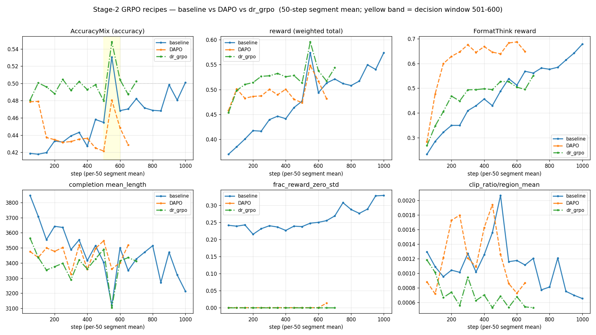
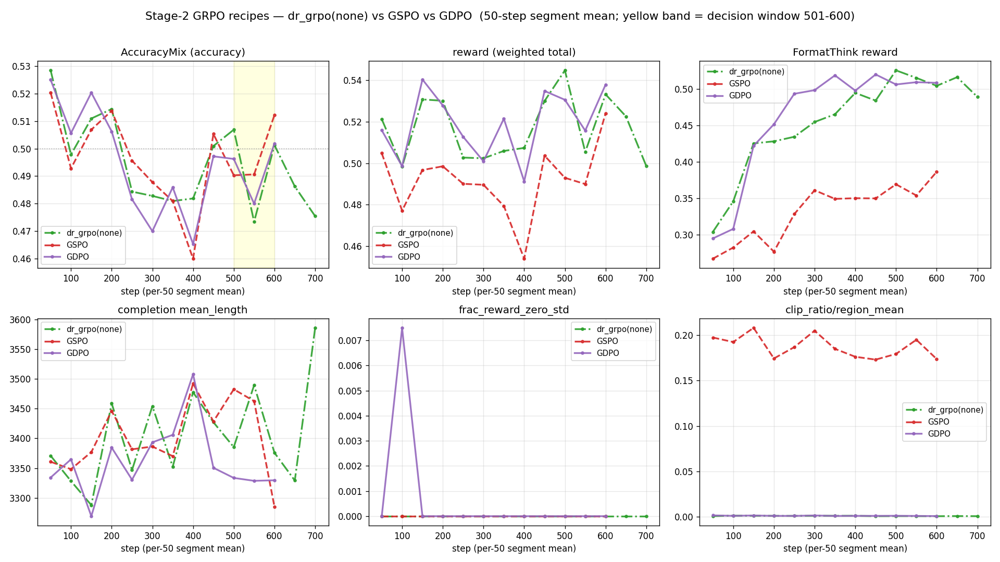

Stage-2 설계 근거 — 외부 연구 조사, 하이퍼파라미터 관행, 재설계, DeepSeek-V4 식 전문가+통합 구조, 데이터 구축, GRPO 변형 A/B
요약 — 결론 먼저
- Stage-2 를 도메인별 전문가 3종 + 통합 구조로 바꿨다(2026-08-13). DeepSeek-V4 와 Kimi K3 가 독립적으로 같은 구조에 도달했다. 혼합 학습은 일반 +8.18pp 를 얻었다. 의료는 +0.75pp(p>0.5)로 미검출이었다. 도메인 전용 학습은 같은 step 에서 소스를 1.3~4.9배 더 노출한다. → 4부
- 콜드스타트 SFT 는 계속 필요하다. 조사한 8개 모델 전부 RL 앞에 SFT 가 있다. 태그를 버려도 형식 학습만 사라진다. long-CoT 행동·출발 정책 품질·길이 기준선·시각 주의 유도는 남는다. 과도한 SFT 는 RLVR 을 방해한다. → 1부 §3
- 2026년 불안정의 주범은 학습–추론 확률 불일치다. 그래서 롤아웃 logprob 불일치 계측을 넣었다. → 1부 ③, 3부 F
- 코어 알고리즘(손실·advantage·필터링)은 외부 관행과 맞는다. 관행과 다른 4곳(KL β·그룹 크기·배치·temperature)은 자원 제약 때문이다. RLVR 은 ≤1 epoch + 조기중단이 맞다. → 2부
- 재설계 A~I 중 A+B 는 GPU 비용 0 으로 개시 낙폭을 −0.324 → −0.195(40%) 줄인다. repetition·언어 일관성 보상은 실측으로 기각했다. → 3부
- 통합은 공짜인 가중치 산술부터 시작한다(계단식 통합). 이 설계는 지금도 유효하다. → 4부 §8
- 도메인 전문가 3종은
scale_rewards=gdpo,beta 0,num_generations8(KISTI/kgpu)·16(B200),temperature 1.0이다. 3부 D(none)·§6(beta=0.04·num_generations=4)와 2부 "이 프로젝트" 열(β 0.04·그룹 4·temp 0.9), 4부 §7-3 ②("이미none으로 정했다")는 대체됐다. - 전문가는
sft_mixed_merged에서 새로 시작했다. 3부 §5(checkpoint-850 에서 재개)는 실행하지 않았다. - 채택 체크포인트는 deepvision 2192 · mmk12 350 · pmcvqa 4896 이다. 4부 §6(1,000 step)·§9(600 step)는 대체됐다.
- Stage-3 는 전문가 3종 통합 모델에서 시작한다. 4부 §2 의 "Stage-3 = E3-b(E3-a 위 2차 학습)"는 대체됐다.
- 1부(서베이)에는 원본에 낡은 내용 배너가 없다.
1부 · 2026년 중국·한국 모델 학습 단계 조사 (2026-05 ~ 08 중심)
조사일 2026-08-13 · 목적: Stage-2 재설계를 위한 외부 근거 확보 질문 두 개 — ① 최근 모델들은 학습 단계를 어떻게 쪼개는가 ② <think></think><answer></answer> 형식을 버리면 Stage-1 콜드스타트 SFT 도 필요 없어지는가
0. 신뢰도 표기
이 문서의 근거는 세 등급이다. 섞어 읽으면 안 된다.
| 등급 | 뜻 | 이 문서에서 |
|---|---|---|
| A | arXiv 테크리포트 본문에서 직접 확인 | K-EXAONE 2.0 · EXAONE 4.5 · Kimi K3 · HyperCLOVA X 32B Think · SAPO · IcePop |
| B | 테크리포트 초록 + 2차 정리 글 교차 | DeepSeek-V4 · Qwen3.5-Omni · Qwen3-VL |
| C | 2차 출처만 (벤더 블로그·비교 사이트) | GLM-5.2 · MiniMax M3 · Kimi K3 일부 수치 |
C 등급은 방향성 참고용이다. 설계 근거로 쓰지 말 것.
1. 한눈에 보는 학습 단계
| 모델 | 공개 | 규모 | 사전학습 이후 단계 |
|---|---|---|---|
| K-EXAONE 2.0 (LG) | 26-08-05 | 750B MoE / 37B 활성 | upcycling → healing → CPT 8T → mid-train 64K(400B) → mid-train 256K(400B) → SFT 350B → 선호학습① 검증가능보상 → 선호학습② 안전 |
| EXAONE 4.5 (LG, VLM) | 26-04-09 | — | 비전인코더 1.2B 스크래치 → 멀티모달 사전학습 S1(420B img+400B txt) → S2(225B+110B) → SFT → 오프라인 선호(비전 DPO·텍스트 GROUPER) → 멀티모달 RL 합동 |
| HyperCLOVA X 32B Think (Naver) | 26-01 | 32B | TSFT → MSFT → MRLVR 4단: 도메인통합 → 길이제어 → 멀티턴 → 지시따르기 → PPO 정렬 |
| Kimi K3 (Moonshot) | 26-07 | 2.8T MoE / 104B 활성, 네이티브 비전 | SFT(콜드스타트) → RL 3도메인 × 3추론강도 = 전문가 9개 → MOPD 다교사 온폴리시 증류 |
| DeepSeek-V4 | 26-06 | 1.6T MoE / 49B 활성 | 도메인별 SFT→GRPO 전문가 개별 육성 → OPD 전어휘 KL 증류로 단일 모델 통합 |
| Qwen3.5-Omni (Alibaba) | 26-04-17 | 수천억 MoE | Qwen3 계보 4단: long-CoT 콜드스타트 → 추론 RL → thinking-mode fusion → 범용 RL, Thinker 3단 후처리 |
| GLM-5.2 (Zhipu) ⚠️C | 26-06 | 753B | OPD + critic 기반 PPO 회귀 (GRPO 이탈) |
| MiniMax M3 ⚠️C | 26-06-01 | — | 희소어텐션·네이티브 멀티모달 |
2. 횡단 패턴 — 7가지
① 형식 태그는 보상에서 빠지고 채팅 템플릿으로 내려갔다 🔴
이 프로젝트에 가장 직접적인 발견이다.
- HyperCLOVA X 32B Think(A):
<think>태그를 채팅 템플릿에 둔다. 비추론·추론·에이전트·멀티모달 4종 템플릿을 따로 쓴다. 보상 쪽 format 은 "보조 항"이며 언어일관성·반복억제와 같은 급으로 묶여 있다. - K-EXAONE 2.0(A): 반대 방향으로 더 나갔다 — mid-training 에서 일부러 다양한 템플릿에 노출시켜 "format-invariant tool-use" 를 학습시킨다. 형식을 외우게 하는 게 아니라 형식에 둔감하게 만든다.
- GLM-4.1V(B):
r_format ∈ {0, 0.5},r_accuracy ∈ {0, 1}— 형식은 정확도의 절반 값이고 독립 항이다.
아무도 정확도 보상을 형식 태그에 물려두지 않는다. 우리가 겪은 절벽 — 태그를 잃으면 가중치 1.0 의 정확도까지 0 — 은 2026년 설계 관행에서 벗어난 것이다. (커밋 2a0458a 로 이미 완화)
② 표준편차 정규화를 뺀다
- EXAONE 4.5(A): GRPO 를 쓰되 "표준편차 정규화를 생략해 학습 안정성을 보존한다". 그룹 평균만 빼고 나눗셈을 안 한다.
- 우리 실행은
scale_rewards=gdpo(보상함수별 z → 가중합 → 배치 화이트닝)였다. 사후분석에서 무죄로 판정했지만(재가중 ±15%), 필드 관행은 나눗셈을 빼는 쪽이다. - EXAONE 4.5 는 zero-variance filtering 도 명시한다 — advantage 가 전부 0 인 그룹을 버린다. 우리는
frac_reward_zero_std평균 0.0106 이라 물리진 않았지만, 공짜다.
③ 2026년 불안정의 주범은 학습–추론 확률 불일치다 🔴
| 기법 | 출처 | 내용 |
|---|---|---|
| IcePop | Ant Ling, EXAONE 4.5 채택(A) | 학습·추론 엔진의 토큰 확률차가 5% 넘으면 학습이 사실상 실패. 토큰별 마스킹 + 양방향 절단으로 불일치 토큰의 업데이트를 버린다. GRPO 는 180~200 step 에서 붕괴, IcePop 은 지속 상승 |
| SAPO | Qwen3-VL 채택(A, arXiv 2511.20347) | 하드 클리핑을 온도 제어 soft gate 로 대체. 비대칭 온도 τ_neg > τ_pos 가 안정성의 핵심(어블레이션 확인) |
| per-token regularization | Kimi K3(A) | partial rollout 이 여러 iteration 에 걸치며 생기는 극단적 off-policy 를 토큰 단위 정규화로 흡수 |
⚠️ 우리도 같은 계열의 위험에 노출돼 있다. vLLM colocate + LoRA 구성은 롤아웃(추론)과 업데이트(학습)가 서로 다른 수치 경로를 탄다. 우리 붕괴가 step 899, 즉 180~200 이 아니라 900 대 였다는 점은 다르지만, "확률차 누적이 임계를 넘으면 절벽"이라는 형태는 관찰과 부합한다. 다음 실행에서 반드시 계측할 것 — 롤아웃 logprob 대 학습 logprob 의 차이 분포.
④ 길이는 소프트 패널티가 아니라 하드 예산으로 다룬다
- Kimi K3(A): 콜드스타트 모델에서 문제별 초기 예산
b₀(x)를 추정 → 배수 σ 초과 시 이진 비교에서 자동 패. 토큰 임계 초과 시 보상을 −1 로 덮어씀. - HyperCLOVA X 32B Think(A): 길이제어 RLVR 을 독립 단계로 둔다.
- ReVisual-R1(ICLR 2026): Efficient-Length Reward.
우리 soft_overlong 은 가중치 0.2 의 부드러운 감점이다. 붕괴 후 길이가 1,376 → 3,010 으로 폭주하는 동안 이 항은 −0.104 수준에 머물렀다. 하드 예산이었다면 −1 로 즉시 끊겼다.
⑤ 도메인 전문가를 따로 키우고 증류로 합친다 🔴
2026년의 가장 큰 구조적 변화다. DeepSeek-V4 와 Kimi K3 가 독립적으로 같은 결론에 도달했다.
[단일 모델에 순차 RL] [2026년 관행]
base → SFT → RL(일반) base → SFT ─┬→ RL(일반) ┐
→ RL(의료) ├→ RL(코딩) ├→ 온폴리시 증류 → 단일 모델
→ 뒤 단계가 앞을 잊음 └→ RL(에이전트)┘- DeepSeek-V4(B): 도메인별로 SFT→GRPO 전문가를 독립 육성 → 전어휘 KL 온폴리시 증류로 통합. 토큰 단위 추정이 아니라 전어휘 손실을 쓰는 게 핵심 — 전문가들이 불일치할 때 그래디언트가 안정된다.
- Kimi K3(A): 3도메인 × 3추론강도 = 전문가 9개 → MOPD. 학생이 자기 롤아웃을 돌리고, 해당 도메인 교사가 토큰별 밀집 보상을 준다.
우리 Stage-2(일반) → Stage-3(의료) 순차 구조가 정확히 이 패턴이 대체하려는 것이다. 그리고 우리는 이미 그 대가를 데이터로 봤다 — Stage-2 는 일반 +8.18pp 를 벌었지만 의료는 여섯 지점 전부 미검출(p>0.5)이다. 순차 RL 이 목표 도메인으로 전이되지 않았다.
⑥ RL 알고리즘은 수렴이 아니라 분화 중이다
| 진영 | 대표 | 근거 |
|---|---|---|
| GRPO + 안정화 패치 | EXAONE 4.5(IcePop), HyperCLOVA X(KL 제거·비대칭 클리핑·동적 샘플링) | 메모리 효율 |
| GRPO 대체 | Qwen3-VL(SAPO) | 하드 클리핑의 정보 손실 |
| PPO 회귀 | GLM-5.2 ⚠️C | 보상 해킹 억제에 critic 이 유리 |
HyperCLOVA X 32B Think 의 GRPO 개조가 특히 구체적이다(A):
- KL 패널티 제거 — 생성 다양성 확보 목적
- 상단 클립 > 하단 클립 (비대칭)
- 동적 샘플링 + 적응 클리핑
- 정렬 단계는 PPO — "고정 시간 내 최적화 스텝 수가 GRPO 계열보다 많다"
⚠️ 우리 beta=0.04(KL 유지) 대 HyperCLOVA X 의 KL 제거는 정반대다. 다만 목적이 다르다 — 저쪽은 다양성 확보, 우리는 정책 이탈 억제. 우리 붕괴는 다양성 부족이 아니라 이탈이었으므로 KL 을 없애는 방향은 위험하다. 비대칭 클리핑도 같은 이유로 신중해야 한다 ([arXiv 2509.26114] clip-low 는 엔트로피를 올리고 clip-high 는 내린다).
⑦ 불안정은 대부분 아키텍처 층위에서 잡는다
- K-EXAONE 2.0(A): 깊은 층 일부 전문가의 활성값 폭주 → Clamped SwiGLU(임계 7.0). 피크 활성 6,862 → 48.96.
- Kimi K3(A): latent MoE 라우팅 경로의 활성 폭발 → up-projection 앞 RMSNorm + Sigmoid-Tanh GLU. 극단 희소성(전문가 896개·56배)에서 auxiliary-loss-free 부하분산 붕괴 → Quantile Balancing.
- Kimi K3(A): 비전 타워 최적화 불안정 — SigLIP 초기화 인코더가 지속적으로 높은 gradient norm 과 잦은 스파이크를 보임 → MoonViT-V2 를 next-token prediction 으로 스크래치 학습해 해결.
마지막 항목이 우리와 관련 있다. 우리는 freeze_vit=True 로 비전 타워를 얼려 이 문제를 회피 중이다. 사후분석 §7 의 "freeze_vit=False 의료 가설"을 열기 전에 Kimi 의 관찰을 기억할 것 — 비전 타워를 RL 에 열면 gradient norm 스파이크가 따라온다.
3. 콜드스타트 SFT 는 여전히 필요한가
결론: 필요하다. 다만 하는 일이 형식 학습이 아니다. 그리고 많이 하면 해롭다.
(a) 조사한 모델 중 순수 RL-from-base 는 하나도 없다. 8개 전부 RL 앞에 SFT 가 있다. Kimi K3 는 명시적으로 "SFT/Cold-Start" 라 부르고, 여기서 추정한 b₀(x) 를 뒤 RL 단계의 길이 예산 기준선으로 쓴다 — 콜드스타트가 형식뿐 아니라 후속 RL 의 하이퍼파라미터를 공급한다.
(b) 그러나 "많을수록 좋다"가 2026년에 뒤집혔다.
| 논문 | 발견 |
|---|---|
| SFT Overtraining Predicts Rank Inversion via Entropy Collapse Under RLVR | SFT 를 과하게 하면 출력 분포가 과집중(저엔트로피) → RLVR 신호가 안 먹힘. SFT 후 순위와 RLVR 후 순위가 뒤집힌다(rank inversion). 최적점이 존재하며 최대화가 아니다 |
| The Synergy Dilemma of Long-CoT SFT and RL (추론 VLM 대상) | 과도한 long-CoT SFT 가 후속 RL 을 방해한다 |
(c) 멀티모달에서는 콜드스타트의 *종류*가 결정적이다. 🔴
ReVisual-R1 (ICLR 2026) 은 3단 커리큘럼이다 — 텍스트 전용 콜드스타트 → 멀티모달 RL → 텍스트 전용 RL. 그리고 관련 연구가 이유를 짚는다:
멀티모달 콜드스타트는 시각 주의 범위를 못 끌어올린다(베이스 모델과 주의 분포가 거의 같다). 텍스트 전용 콜드스타트는 뚜렷이 올린다. — "Lazy Attention Localization"
우리 Stage-1 은 멀티모달 혼합 콜드스타트(sft_mixed_merged)다. 이 발견이 맞다면 우리 콜드스타트는 시각 주의를 못 키웠을 수 있다. 의료(pmcvqa) 여섯 지점 전부 미검출인 것과 정합적인 가설이다 — 물론 확증은 아니다.
그래서 태그를 버리면?
태그를 버려도 콜드스타트는 남는다. 콜드스타트가 하는 일을 쪼개보면:
| 콜드스타트의 역할 | 태그를 버리면? |
|---|---|
① 출력 형식 학습 (<think>…</think><answer>…</answer>) | 사라짐 — 템플릿으로 내려가면 SFT 가 가르칠 게 없다 |
| ② 긴 사고사슬 행동 자체 (태그와 무관) | 남음 — 베이스는 짧게 답한다. RL 만으로 long-CoT 를 세우는 건 훨씬 비싸다 |
| ③ RL 출발 정책 품질 = 탐색 부담 경감 | 남음 — 우리 실측: v2 0.185 → v3 0.909(형식), 홀드아웃 0.295 → 0.348(+18%). 정확도가 같이 올랐다 |
④ 길이 예산 b₀(x) 등 후속 RL 의 기준선 공급 | 남음 (Kimi K3 방식) |
| ⑤ 멀티모달: 시각 주의 유도 | 남음, 단 텍스트 전용이 더 나을 수 있음 |
①만 사라지고 ②③④⑤는 그대로다. 우리 Stage-1 실측이 이를 뒷받침한다 — v3 콜드스타트는 형식만 고친 게 아니라 홀드아웃 정확도를 +18% 올렸다. 그건 태그와 무관한 이득이다.
4. 이 프로젝트에 대한 함의
처음부터 다시 돌린다면 — 우선순위
| 조치 | 근거 등급 | 비용 | |
|---|---|---|---|
| 1 | 정확도 보상을 형식에서 분리 (완료, 2a0458a) | 자체 실측 + ①패턴 | 0 |
| 2 | 형식 태그를 채팅 템플릿으로 내리기. 보상의 format 항은 언어일관성·반복억제와 같은 급의 보조항으로 축소 | A (HyperCLOVA X) | 낮음 |
| 3 | 길이를 하드 예산으로. b₀(x) 추정 후 σ 배 초과 시 보상 −1 | A (Kimi K3) | 낮음 |
| 4 | 학습–추론 logprob 불일치 계측 추가. 5% 임계 감시 | A (IcePop) | 낮음 |
| 5 | scale_rewards 나눗셈 제거 + zero-variance 그룹 필터 | A (EXAONE 4.5) | 0 |
| 6 | overlong_filter=False | 자체 실측 (사후분석 §4-4) | 0 |
| 7 | 콜드스타트를 텍스트 전용으로 바꿔 시각 주의 확인 | B (ReVisual-R1) | 중간 — Stage-1 재실행 |
| 8 | Stage-2/3 를 순차에서 병렬 전문가+증류로 재구성 | B (DeepSeek-V4, Kimi K3) | 높음 — 구조 변경 |
1~6 은 다음 실행에 바로 넣을 수 있고 GPU 추가 비용이 거의 없다. 7~8 은 설계 변경이라 별도 판단이 필요하다.
8번을 진지하게 볼 이유
우리 데이터가 이미 순차 구조의 한계를 보여준다 — Stage-2 는 일반 +8.18pp, 의료 +0.75pp(p>0.5, n=400). 계획서의 산출물은 의료다. 2026년의 두 프런티어 랩이 독립적으로 "도메인별로 따로 키우고 증류로 합친다"에 도달했다는 건, 순차 RL 의 도메인 전이 실패가 우리만의 문제가 아니라는 뜻이다.
다만 우리 하드웨어(A100 80GB PCIe, NVLink 없음)에서 전어휘 KL 증류는 통신 비용이 크다. 작게 시작하는 길 — 전문가를 2개(일반·의료)만 두고, 증류 대신 가중 평균 병합부터 시험해 보는 것.
5. 출처
테크니컬 리포트 (A/B 등급)
- K-EXAONE 2.0 Technical Report (arXiv 2608.04505) · K-EXAONE (arXiv 2601.01739)
- EXAONE 4.5 Technical Report (arXiv 2604.08644)
- Kimi K3: Open Frontier Intelligence (arXiv 2607.24653)
- DeepSeek-V4: Towards Highly Efficient Million-Token Context Intelligence (arXiv 2606.19348)
- Qwen3.5-Omni Technical Report (arXiv 2604.15804)
- Qwen3-VL Technical Report (arXiv 2511.21631)
- HyperCLOVA X 32B Think (arXiv 2601.03286) · HyperCLOVA X THINK (arXiv 2506.22403)
- Solar Open Technical Report (arXiv 2601.07022)
알고리즘·안정성
- Soft Adaptive Policy Optimization — SAPO (arXiv 2511.20347)
- IcePop / Ring-flash-2.0 — MoE RL 안정화 · Every Step Evolves: Trillion-Scale Thinking Model (arXiv 2510.18855)
- Stabilizing MoE RL by Aligning Training and Inference Routers (arXiv 2510.11370)
- Clip-Low Increases Entropy and Clip-High Decreases Entropy (arXiv 2509.26114)
- Understanding and Preventing Entropy Collapse in RLVR (arXiv 2605.11491)
콜드스타트 SFT 의 양·종류
- SFT Overtraining Predicts Rank Inversion via Entropy Collapse Under RLVR (arXiv 2606.18487)
- The Synergy Dilemma of Long-CoT SFT and RL (arXiv 2507.07562)
- ReVisual-R1 (ICLR 2026) · From Narrow to Panoramic Vision: Attention-Guided Cold-Start (arXiv 2603.03825)
- Advancing Multimodal Reasoning: Optimized Cold Start to Staged RL (arXiv 2506.04207)
- Skywork-R1V3 Technical Report (arXiv 2507.06167)
2차 출처 (C 등급 — 방향성 참고용)
- GLM-5.2 정리 (Medium, 2026-06) · Zhipu GLM-5.2 분석
- Kimi K3 vs DeepSeek V4 vs GLM-5.2 비교 · Chinese LLMs 2026
- DeepSeek V4: ten teachers, one student
2부 · RLVR 하이퍼파라미터 — 외부 관행 대조 (2026 리포트 조사)
⚠️ 낡은 내용: 아래 표의 "이 프로젝트" 열(β 0.04 · 그룹 4 · temp 0.9)은 2026-07 구 혼합 실행 값이다. 도메인 전문가 실행은 beta 0 · num_generations 8(KISTI/kgpu, B200 은 16) · temperature 1.0 을 썼다 → ../CLAUDE.md §3 · experiments_all_stages.html 2-C. 외부 관행 대조·출처는 그대로 유효하다.
목적: 이 프로젝트의 Stage-2 RLVR(GRPO/GDPO) 설정을 외부에 알려진 관행과 대조하고, 자원 제약으로 벌어진 지점과 실험 우선순위를 명시한다. 프로젝트 실측 근거는 ../README.md(Stage-2 · step600 포화)·../HANDOFF.md, 실행 절차는 ../README.md "빠른 실행" · 데이터 빌드는 stage2_design.html §5-1.
0. 조사 프레이밍 (솔직한 한계)
- 2026년 프런티어 리포트(Qwen3.6·DeepSeek V4·Kimi K2.6·MiniMax M2 등)는 아키텍처는 자세히 공개해도 RL 하이퍼파라미터 전체 표는 거의 공개하지 않는다.
- 구체적 RLVR 레시피가 공개된 것은 주로 2025년 중반 리포트(Magistral, MiniMax-M1, DAPO, Dr.GRPO).
- 2026년의 기여는 대부분 "얼마나 오래 학습할지"(과학습·다양성 붕괴)를 정밀화한 연구 논문.
- 아래는 그 둘을 합친 현재 통용 관행이며, 절대 정답이 아니라 다수설 + 근거 출처다.
1. 하이퍼파라미터 대조표
| 파라미터 | 외부 관행(다수설) | 근거 | 이 프로젝트 | 판정 |
|---|---|---|---|---|
| KL 페널티 β | 0으로 제거가 대세 | Magistral "remove KL entirely" · MiniMax-M1(CISPO) "no KL penalty" · DAPO · Open-Reasoner-Zero("removing KL→optimal") | 0.04 | ⚠️ 보수적. 검증가능 보상엔 KL 불필요/유해가 다수설 |
| 학습률(actor) | 작고 상수, full-FT ~1e-6 | DAPO/Dr.GRPO 계열; 스윕해도 marginal | LoRA 1e-5 | ✅ LoRA라 더 높은 게 정상 |
| 그룹 크기(rollouts/prompt) | 8~16 | DAPO/NeMo=16 · 다수=8 · "8→4는 정확도 하락" | 4 | ⚠️ 관행 하한 아래(메모리 절충) |
| 배치(prompt/step) | 매우 큼(512~수천 시퀀스) | DAPO/NeMo=512×16 · Magistral 2k~8k | 32(1×accum4×8gpu) | ⚠️ 소규모(8GPU LoRA 제약) |
| clip ε | εlow 0.2 / εhigh 0.26~0.30(clip-higher) | DAPO 0.28 · Magistral 0.26~0.3 | 0.2 대칭 | ✅ dr_grpo는 clip-higher 미적용이 정석 |
| 손실 정규화 | 길이편향 제거(토큰레벨/상수) | Dr.GRPO · DAPO · Magistral 공통 | dr_grpo loss | ✅ 일치 |
| advantage 스케일 | std 나눗셈 제거 or minibatch 정규화 | Dr.GRPO scale_rewards=none · Magistral minibatch | GDPO(보상별 정규화) | ✅ 최신 계열 |
| dynamic sampling / overlong filter | 표준(acc 0·1 그룹 폐기, 잘림 제외) | DAPO | 둘 다 有 | ✅ |
| 롤아웃 temperature | ~1.0(탐색) | ORZ "T=1 best" · Magistral 0.7~1.0 | 0.9(ms-swift 기본) | 🔧 문헌 1.0과 미세차, A/B 가치 |
요약: 손실·advantage·필터링(코어 알고리즘)은 최신 관행과 정합. 관행과 벌어진 4곳 (KL β · 그룹 4 · 배치 32 · temp 0.9)은 전부 8GPU·LoRA·no-NVLink 자원 제약의 결과이며, 치명적 오류가 아니라 "탐색 신호가 다소 약할 수 있는" 방향의 트레이드오프다.
2. 에포크 — "많이"가 아니라 "1~수 에포크 + 조기중단"
RLVR은 SFT와 달리 에포크를 많이 돌리면 안 된다. 프로젝트 실측(step600 포화)과 외부 근거가 일치.
- 《Understanding Diversity Collapse in RLVR via Overtraining》(arXiv 2606.15455, 2026-06)
- MATH/Qwen2.5-Math-7B: 검증 Pass@1은 ~5에포크에서 정체. 이후 train 성공률만 68.7%→77.1%, 검증은 ~72% 평평.
- "후반 에포크는 Pass@1 이득 거의 없이 high-k Pass@k(다양성)만 깎는다" → 5에포크 조기중단 권고.
- 표준 n=8 세팅에선 "대부분의 업데이트가 추론경계엔 과학습".
- 기전: 문제 기여도 포화 → 이후 업데이트는 능력 확장이 아니라 선호 궤적에 확률질량 집중 (policy sharpening) → 다양성 붕괴.
- 프런티어 리포트는 에포크로 세지 않는다: Magistral·MiniMax-M1은 대형 배치 + 신선한 롤아웃 + 길이 점증(16k→24k→32k)으로 스텝 단위로 돌리고 평가곡선으로 멈춘다.
환산(이 프로젝트) — *2026-08-02 정정*: GRPO 의 per_device_train_batch_size 는 프롬프트가 아니라 completion 을 센다. generation_batch_size = 1 × 8gpu × accum4 = 32 completions → 프롬프트/step = 32 ÷ num_generations(4) = 8. 따라서 확장셋 74,787 ÷ 8 = 1 epoch = 9,348 step (종전 표기 2,337 은 ÷ num_generations 누락). step600 = 4,800 prompt ≈ 0.064 epoch, 계획한 2,337 step 도 0.25 epoch 에 그친다 → 포화는 에포크가 아니라 스텝 수준에서 온 것. 실측 확증·영향 = stage2_mixed_run.html §3.
결론: 에포크 상한을 늘리지 말 것. ≤1에포크, 50스텝마다 홀드아웃 평가, 포화 시 조기중단이 정답.
3. 실행 제언 (우선순위)
| # | 제언 | 방법 | 우선순위 |
|---|---|---|---|
| 1 | 그룹 4 → 8 재고 | NUM_GEN=8 bash scripts/launch_stage2_expanded.sh (길이예산·메모리 트레이드오프 측정) | 중 |
| 2 | 롤아웃 temp 0.9 → 1.0 A/B | TEMPERATURE=1.0 … (문헌 다수설) | 중 |
| 3 | KL β 0.04 → 0.01 탐색 여지 확대 | BETA=0.01 … (초기 붕괴 없으면) | 낮 |
| 4 | 에포크 상한 유지 — 늘리지 말 것 | 지금 계획(≤1ep·조기중단) 그대로 | — |
⚠️ 재현성 원칙: 위는 전부 env override 로 실험하며, 스크립트 기본값은 검증된 A/B 값 (NUM_GEN 4 · BETA 0.04 · TEMPERATURE 0.9) 그대로 둔다. 기본값을 바꾸면 과거 A/B와 clean 비교가 깨진다. 각 knob 은 scripts/21_rlvr_grpo_adv.slurm 상단 주석 및 launch_stage2_expanded.sh 사용법에 노출돼 있다.
4. 출처
- Understanding Diversity Collapse in RLVR via the Lens of Overtraining — arXiv:2606.15455 https://arxiv.org/html/2606.15455v1
- Magistral (Mistral) technical report — arXiv:2506.10910 https://arxiv.org/html/2506.10910v1 (KL 제거·advantage minibatch 정규화·길이정규화·εhigh 0.26~0.3·temp 0.7~1.0·길이 16k→32k 점증)
- MiniMax-M1: Scaling Test-Time Compute — arXiv:2506.13585 https://arxiv.org/html/2506.13585v1 (CISPO=importance weight 클리핑, KL 제거, temp 1.0/top-p 0.95, 40k/80k 길이)
- DAPO walkthrough — NVIDIA NeMo-RL https://docs.nvidia.com/nemo/rl/latest/guides/dapo.html (num_prompts_per_step 512 · num_generations 16 · εhigh 0.28 · overlong_buffer 4096 · max_resp 20480)
- Interconnects: base model RL & GRPO tweaks (Open-Reasoner-Zero, Dr.GRPO) https://www.interconnects.ai/p/papers-im-reading-base-model-rl-grpo
- DAPO explainer https://medium.com/@syed_hasan/dapo-decoupled-clip-and-dynamic-sampling-policy-optimization-grpo-on-steroids-9c571a0536f3
- GRPO fine-tuning 2026 practical guide (Spheron) https://www.spheron.network/blog/grpo-fine-tuning-gpu-cloud/
조사 2026-07-24. ms-swift 4.13 기준 rollout temperature 기본값 = 0.9 (swift/arguments/rlhf_args.py).
3부 · Stage-2 재실행 실험 설계
⚠️ 낡은 내용: 항목 D(scale_rewards gdpo → none)와 §5(checkpoint-850 에서 재개)는 실행되지 않았다. 도메인 전문가 3종은 scale_rewards=gdpo 로, sft_mixed_merged 에서 새로 시작했다(../HANDOFF.md §0·§1, experiments_all_stages.html 2-C). §6 의 beta=0.04·num_generations=4 유지도 바뀌었다(beta 0, num_gen 8/16).
작성 2026-08-13 · 근거 = 2026년 모델 서베이 + 붕괴 사후분석 rev.2 대상 = job 73924/73925 붕괴 이후의 Stage-2 재실행 설정
설계 원칙: 서베이에서 가져온 것과 우리 로그에서 잰 것을 섞지 않는다. 각 항목에 근거 출처와 실측 효과를 따로 적는다. 실측이 없는 항목은 그렇다고 적는다.
0. 재현 실험이 바꾼 전제
먼저 짚어야 할 것 — 개시 원인을 찾는 일은 끝났다.
checkpoint-800 에서 설정 28개를 전부 동일하게 맞춰 재실행한 결과(job 74583, step 801→927), 붕괴가 재현되지 않았다. 전조 램프(KL 0.030→0.121)조차 재현되지 않았다. 재개가 옵티마이저·LR·데이터로더 위치까지 복원했으므로 달랐던 자유변수는 vLLM 롤아웃 샘플링뿐이다.
따라서 "step 900 에 터지게 되어 있었다"는 설명은 틀렸다. 개시는 확률적이었다. 설계 목표가 바뀐다 — 개시를 막는 것이 아니라, 개시가 절벽으로 이어지지 않게 만드는 것.
이 문서의 변경안은 전부 이 목표에 정렬되어 있다.
1. 요약
| 변경 | 근거 | 실측 효과 | 비용 | |
|---|---|---|---|---|
| A | 정확도 보상을 형식에서 분리 ✅완료 | 자체 실측 + 서베이 ① | 개시 낙폭 −0.324 → −0.254 | 0 |
| B | 형식 보상을 이진→단계형 | 자체 실측 + [GLM-4.1V] | 개시 낙폭 −0.254 → −0.195 | 0 |
| C | overlong_filter → false | 자체 실측(§4-4) | 회복 차단 요인 제거 | 0 |
| D | scale_rewards gdpo → none | EXAONE 4.5 | 없음(위생) | 0 |
| E | max_steps 를 실제 정지 step 으로 | 설계 오류 수정 | 없음 | 0 |
| F | rollout logprob 불일치 계측 | IcePop | 미측정 — 재는 게 목적 | 낮음 |
| G | 감시자 상시 가동 | 자체 검증 | 실제 발견보다 146 step 빠름 | 0 |
| H | 길이 하드 예산 | Kimi K3 | 미측정 | 코드 |
| I | loss_type=sapo | Qwen3-VL/SAPO | ⚠️ 보류 — 트레이드오프 | 0 |
A+B 만으로 개시 시점 총보상 낙폭이 −0.324 → −0.195 로 40% 줄어든다. 둘 다 GPU 비용 0 이다.
2. 좋은 소식 — ms-swift 4.13 이 이미 지원한다
서베이에서 찾은 2026년 기법 대부분이 이미 플래그로 들어와 있다. 커스텀 코드가 필요 없다. (설치본 work/images/ms-swift-413-sandbox/.../swift/rlhf_trainers/args_mixin.py 직접 확인)
| 서베이 발견 | ms-swift 인자 | 상태 |
|---|---|---|
| SAPO 소프트 게이트 (Qwen3-VL) | --loss_type sapo + --tau_pos --tau_neg | 구현 확인 (grpo_trainer.py:1205) |
| IcePop 계열 학습–추론 불일치 마스킹 | --rollout_importance_sampling_mode token_mask + --rollout_importance_sampling_threshold | 구현 확인 (:2410) |
| 불일치 계측만 | --log_rollout_offpolicy_metrics true | 구현 확인 (:2502) — KL·k3_kl·ppl_ratio·chi2_token·chi2_seq |
| GSPO 시퀀스 단위 IS | --importance_sampling_level sequence | 이미 사용 중(recipe gspo) |
| std 정규화 생략 (EXAONE 4.5) | --scale_rewards none | 이미 사용 중(recipe dr_grpo) |
| zero-variance 그룹 처리 | --dynamic_sample true | 이미 켜져 있음 — 폐기가 아니라 재샘플(DAPO 방식) |
| 엔트로피 상위 토큰만 학습 | --top_entropy_quantile | 미사용 |
| off-policy 시퀀스 마스킹 | --off_policy_sequence_mask_delta | 미사용 |
⚠️ EXAONE 4.5 는 zero-variance 그룹을 버린다. 우리는 dynamic_sample 로 재샘플한다. 우리 쪽이 표본을 더 쓰는 대신 롤아웃 비용이 든다. frac_reward_zero_std 평균 0.0106 이라 어느 쪽이든 영향이 미미하다. 바꿀 이유 없음.
3. 변경 항목 상세
A. 정확도 보상을 형식에서 분리 ✅ 완료 (2a0458a)
근거 — 서베이 ①패턴: 조사한 모델 중 정확도 보상을 형식 태그에 물려둔 사례가 없다. HyperCLOVA X 32B Think 는 <think> 를 채팅 템플릿에 두고 format 을 언어일관성·반복억제와 같은 급의 보조항으로 취급한다. GLM-4.1V 는 r_format ∈ {0, 0.5} 대 r_accuracy ∈ {0, 1} 로 독립 항이다.
우리 문제 — _strip_answer 가 태그 없을 때 추론 전문을 답안으로 넘기고, _LETTER_PICK 이 ^ 앵커라 letter 경로가 구조적으로 항상 0 이었다. 의료(letter) −47.5pp 대 수학(본문 숫자 추출 가능) −6.5pp 로 갈린 원인.
실측 (73924 롤아웃 9,504건, scripts/probe_answer_fallback.py)
| 값 | |
|---|---|
| 태그 인위 제거 후 복원 일치 | 94.6% (거짓양성 1.13%) |
| 순열검정 | z = 3.6 / 4.9 / 6.6 — 우연 아님 |
| 회귀: 태그 있는 롤아웃 6,633건 | 전부 무변경 (완전한 no-op) |
B. 형식 보상을 이진 → 단계형 🔴 신규
근거 — GLM-4.1V 의 r_format ∈ {0, 0.5} 가 이미 이진이 아니다. 다만 직접적 근거는 우리 실측이다.
우리 관찰 — 붕괴 개시 시점 출력의 실제 모양:
"...This corresponds to option B.\n</think><|im_end|>"</think> 는 냈다. <answer> 만 없다. 추론을 끝내고 답 태그를 안 쓰고 멈춘다.
| 구간 | n | fmt=1.0 | </think>만 | 둘 다 없음 |
|---|---|---|---|---|
| 붕괴전 751-898 | 4,736 | 93.1% | 0.3% | 6.7% |
| 개시 899-910 | 384 | 10.7% | 58.9% | 29.7% |
| 확산 911-950 | 1,280 | 22.0% | 32.1% | 37.1% |
개시 구간의 58.9% 가 </think> 를 냈는데 형식 점수 0.0 을 받는다. 절벽의 상당 부분이 여기다.
변경안 — configs/accuracy.py: FormatThink
1.0 <think>실질추론</think><answer>…</answer> (현행 유지)
0.5 </think> 는 냈으나 <answer> 없음 ← 신규
0.0 구조 자체가 없음 (현행 유지)실측 효과 (총보상 = acc×1.0 + fmt×0.2 + soft_overlong×0.2)
| 구간 | 현행 | +A | +A+B | 낙폭 완화 |
|---|---|---|---|---|
| 붕괴전 751-898 | 0.6180 | 0.6223 | 0.6225 | (기준선, +0.7%) |
| 개시 899-910 | −0.3240 | −0.2537 | −0.1948 | 39.9% |
| 확산 911-950 | −0.3733 | −0.3069 | −0.2748 | 26.4% |
| 퇴화 951-1047 | −0.2323 | −0.2033 | −0.1713 | 26.3% |
✅ 정상 구간이 +0.0045 밖에 안 움직인다. 붕괴 영역에만 듣는다 — 이게 안전 속성이다.
⚠️ 보상 해킹 위험: 부분점수를 주면 <answer> 를 안 쓰는 게 덜 손해다. 다만 0.5 는 여전히 절반 손실이고, A 의 폴백도 의도적으로 불완전(개시 구간 정확도 0.469→0.347)하다. 형식을 잃으면 총보상의 32% 를 잃는다(−0.195 / 0.618). 유인은 남는다. 검증: 재실행 로그에서 rewards/FormatThink/mean 이 0.9 아래로 추세 하락하면 되돌린다.
C. overlong_filter → false
근거 = 자체 실측 (사후분석 §4-4). 서베이 근거 없음 — DAPO 원 논문의 의도와 다르게 우리 상황에서 해롭다.
ms-swift 는 잘린 completion 을 completion_mask 에서 빼는데(grpo_trainer.py:1132), 그 마스크가 KL 계산에도 그대로 쓰인다(1140행). 절단이 늘수록 손실·KL 앵커 양쪽에서 면제되는 샘플이 늘어 되돌아올 힘이 사라진다. 부작용으로 KL 계측 자체가 둔해진다 — step 910~949 의 KL 하락(0.081→0.068)은 개선이 아니라 계측 실패였다.
⚠️ F(불일치 계측)와 상호작용한다. overlong_filter=True 면 rollout logprob 정렬 대상에서 절단 샘플이 빠져 계측이 왜곡된다. C 를 먼저 꺼야 F 가 신뢰할 수 있다.
D. scale_rewards gdpo → none
근거 — EXAONE 4.5 는 GRPO 를 쓰되 "표준편차 정규화를 생략해 학습 안정성을 보존"한다고 명시한다. Dr.GRPO 의 주장과 같다.
실측 효과: 없음. 사후분석 §4-2(a) 에서 gdpo 는 무죄로 판정됐다 — 표본 내 재가중 ±15%, 관측된 병리적 그룹 유형은 none 대비 1.15배에 불과. 이건 위생 조치지 치료가 아니다.
recipe dr_grpo 의 기본값이 이미 none 이므로 SCALE_REWARDS 를 넘기지 않으면 된다.
E. max_steps 를 실제 정지 step 으로
근거 = 설계 오류. 서베이·가설 불필요.
--max_steps 는 정지 지점이자 cosine LR 스케줄의 분모다. 2,337 로 잡고 1,200 에서 멈추면 LR 이 끝까지 안 내려온다. step 900 기준 6.77e-6 대 1.46e-6, 4.62배 차이.
재실행에서 실제로 돌릴 step 수를 그대로 넣는다.
F. rollout logprob 불일치 계측 🔴 신규
근거 — 서베이 ③패턴. 2026년 불안정의 가장 많이 지목된 원인이다.
| 기법 | 채택 | 핵심 |
|---|---|---|
| IcePop | EXAONE 4.5 | 학습·추론 토큰 확률차가 5% 넘으면 학습 실패. GRPO 는 180~200 step 에서 붕괴 |
| SAPO | Qwen3-VL | 하드 클리핑 → 온도 제어 소프트 게이트 |
| per-token reg | Kimi K3 | 극단 off-policy 흡수 |
우리 노출 — vLLM colocate + LoRA 구성은 롤아웃(추론)과 업데이트(학습)가 서로 다른 수치 경로를 탄다. 붕괴가 step 899 로 180~200 과는 다르지만, "불일치 누적이 임계를 넘으면 절벽"이라는 형태는 관찰과 부합한다. 다만 우리는 이걸 한 번도 잰 적이 없다.
변경안 — 1차는 계측만 켠다. 보정은 켜지 않는다.
--log_rollout_offpolicy_metrics true기록되는 지표(grpo_trainer.py:2502): kl(KL(π_rollout‖π_train)) · k3_kl · training_ppl · rollout_ppl · log_ppl_diff · ppl_ratio · chi2_token · chi2_seq
왜 보정을 안 켜는가: 보정(rollout_importance_sampling_mode)을 같이 켜면 변수가 하나 더 늘어 붕괴가 안 나도 무엇 덕분인지 모른다. 먼저 재고, 5% 임계를 넘는 게 확인되면 그때 켠다. 켤 때는 token_mask(IcePop 과 같은 기전 — 임계 초과 토큰의 업데이트를 0으로) + threshold 2.0.
전제 조건: use_fast_infer(vLLM) 필요 — 충족. 정렬 실패 시 경고 후 자동 스킵하므로 안전하다.
G. 감시자 상시 가동
근거 = 자체 검증. scripts/watch_format_collapse.py — 과거 로그 재생에서 step 901 발화, 1,047 step 전 구간 오경보 0회, 실제 발견보다 146 step(13.5h·109 GPU-h) 빠름.
WATCHDOG=1 로 21 스크립트에 이미 배선돼 있다. 재현 실험(74583)에서 오발화 0 으로 실전 검증됐다.
같이 정할 것 — 발화 시 정책. 지금 정해두지 않으면 새벽에 울렸을 때 판단이 늦는다.
| 안 | 동작 | 언제 |
|---|---|---|
| 정지 | 잡을 세우고 마지막 정상 체크포인트 확정 | 기본값 (현재 구현) |
| 되감기 | 마지막 정상 ckpt 에서 LR ↓ 재개 | 붕괴가 반복될 때 |
H. 길이를 소프트 감점 → 하드 예산 (2차 방어선)
근거 — Kimi K3: 콜드스타트 모델에서 문제별 초기 예산 b₀(x) 를 추정하고, 배수 σ 초과 시 이진 비교에서 자동 패. 토큰 임계 초과 시 보상 −1 로 덮어씀. HyperCLOVA X 32B Think 는 길이제어 RLVR 을 독립 단계로 둔다.
우리 상태 — soft_overlong 가중치 0.2. 길이가 1,376 → 3,010 으로 폭주하는 동안 이 항은 −0.104 수준에 머물렀다. 하드 예산이었다면 −1 로 즉시 끊겼다.
⚠️ 다만 우선순위는 낮다. 사후분석에서 확정했듯 길이는 원인이 아니라 결과다 (형식 붕괴 899~904, 길이 폭주 905~ — 10 step 뒤). 2차 방어선으로만 의미가 있다.
A+B+C 를 먼저 넣고, 그래도 길이가 폭주하면 그때 도입한다.
I. loss_type=sapo ⚠️ 보류
근거는 강하다 — SAPO 는 Qwen3-VL 학습에 쓰였고, GSPO·GRPO 대비 우위가 보고됐다. 비대칭 온도 τ_neg > τ_pos 가 안정성의 핵심(어블레이션 확인). ms-swift 에 구현돼 있다(tau_pos=1.0, tau_neg=1.05 기본값).
그런데 소스를 읽어보니 공짜가 아니다.
# grpo_trainer.py:1245
if self.loss_type in ['grpo', 'sapo']:
loss = ((per_token_loss * completion_mask).sum(-1)
/ completion_mask.sum(-1).clamp(min=1.0)).mean() # ← 시퀀스별 길이 정규화
elif self.loss_type == 'dr_grpo':
loss = (per_token_loss * completion_mask).sum() / (batch_size * self.max_completion_length)sapo를 켜면dr_grpo가 제거한 길이 정규화 편향이 되돌아온다. 둘을 동시에 못 쓴다.sapo분기에는 클리핑이 없다 —epsilon/epsilon_high가 무시된다.
판단: 우리 recipe 는 dr_grpo 를 의도적으로 골랐다(길이 정규화 편향 제거). 길이 폭주를 겪은 실행에서 그 편향을 되돌리는 건 검증 없이 할 일이 아니다.
보류하되 A/B arm 후보로 남긴다. 소프트 게이트만 취하고 dr_grpo 정규화를 유지하려면 grpo_trainer.py:1245 에 sapo를 빼고 별도 분기를 추가하는 10줄 패치가 필요하다. 업스트림 수정이므로 컨테이너 재빌드 불가 상황에서는 부담이 있다.
4. 새 recipe 정의 — stable
기존 recipe(dapo/gspo/dr_grpo)를 건드리지 않고 하나 추가한다. A/B 대조가 깨지지 않는다.
# scripts/21_rlvr_grpo_adv.slurm — RECIPE=stable
CORE_ARGS="--dynamic_sample true --max_resample_times $DS_RESAMPLE \
--overlong_filter false" # ← C
RECIPE_ARGS="--loss_type dr_grpo \
--importance_sampling_level token \
--epsilon ${EPS:-0.2} \
--scale_rewards ${SCALE_REWARDS:-none} \
--log_rollout_offpolicy_metrics true" # ← D, F기존 대비 순 변경 3줄이다. 나머지(A·B)는 configs/accuracy.py, E·G 는 실행 인자.
변경 요약 — 현행 대 stable
| 인자 | 현행(73924) | stable | 항목 |
|---|---|---|---|
reward_funcs / weights | 동일 | 동일 (1.0 / 0.2 / 0.2) | — |
AccuracyMix letter 폴백 | 없음 | 있음 | A |
FormatThink | 이진 | 단계형 0 / 0.5 / 1 | B |
overlong_filter | true | false | C |
scale_rewards | gdpo | none | D |
max_steps | 2337(1,047에서 중단) | 실제 정지 step | E |
log_rollout_offpolicy_metrics | 없음 | true | F |
WATCHDOG | 없음 | 1 | G |
loss_type | dr_grpo | dr_grpo (유지) | I 보류 |
beta | 0.04 | 0.04 (유지) | §6 |
5. 실행 계획
| 단계 | 내용 | 비용 | 판정 |
|---|---|---|---|
| 0 | configs/accuracy.py B 구현 + 9,504건 회귀 검증 | 0 (로컬) | 태그 정상 롤아웃 무변경 |
| 1 | 스모크 MAX_STEPS=5 | ~1 GPU-h | 인자 파싱·rollout_correction/* 지표 기록 확인 |
| 2 | checkpoint-850 에서 재개, 200 step | ~90 GPU-h | 불일치 지표 5% 임계 · 형식 유지 |
| 3 | 2 의 결과로 F 보정 켤지 결정 → 본실행 | 예산에 따름 | — |
왜 850 인가: 홀드아웃 51.52%, init 대비 +8.18pp(p<0.0001)로 검증된 최고점이다. 처음부터 다시 돌리는 것보다 800 step 을 아낀다.
⚠️ 큐 대기가 실질 비용이다. 재현 실험은 제출 후 5일 13시간 대기했다. 단계 1·2 를 따로 넣으면 대기가 두 번 붙는다 — 같은 잡 안에서 스모크→본실행을 잇는 편이 낫다.
⚠️ 속도 정정: 벽시계는 step_time(163s)이 아니라 ~330 s/it 이다. 재현 실험 12h 에 127 step. 일정은 반드시 330 기준으로 잡을 것.
5-2. 보상 설정 전면 점검
참조 리포트의 보상 서술 — 편차가 크다
| 리포트 | 보상 서술 |
|---|---|
| Kimi K3 | 🟢 상세 — 검증가능 답 · 루브릭 판정(Agentic GRM, 필수 프로토콜: 결과 읽기→루브릭 생성→채점→기록) · 장황도 제어(σ·ℓ₀ 초과 시 이진비교 자동 패) · 토큰 예산 초과 시 보상 −1 덮어쓰기 · 커널 성능 보상 |
| HyperCLOVA X 32B Think | 🟢 상세 — 가중합 = 환경보상(규칙 검증 + LLM judge) + format + 언어 일관성 + 반복 억제 |
| GLM-4.1V/4.5V | 🟢 수치 — r_format ∈ {0, 0.5} · r_accuracy ∈ {0, 1} |
| Qwen3-VL | 🟡 항목만 — 지시따르기(내용·형식·길이·구조화 출력) + 선호정렬 · code-switching 페널티 |
| K-EXAONE 2.0 | 🟡 항목만 — 수학 답 검증(증명은 judge) · 코드 실행 검증 · 인스턴스별 루브릭 · 길이 통제. 형식은 보상이 아니라 데이터 구성으로 |
| EXAONE 4.5 | 🔴 미상세 — "이전 모델과 같은 보상"·"태스크별 보상 함수" |
| DeepSeek-V4 | 🔴 미상세 — "성공 기준에 맞춘 보상 모델" |
절반은 상세하고 절반은 얇다. 그리고 우리가 구조를 따라 하려는 DeepSeek-V4 가 가장 얇은 쪽이다. 보상 설계 근거는 Kimi K3 · HyperCLOVA X · GLM-4.1V 에서 가져와야 한다.
현재 설정
accuracy_mix 1.0 3분기(math_verify / letter / string) · 이진 0|1 · letter 폴백 추가됨(2a0458a)
format_think 0.2 이진 0|1 · think 실질 ≥16자 요구
soft_overlong 0.2 min( −(len − 4096) / 2048 , 0 ) ← rewards/orm.py:216🔴 발견 ① — soft_overlong 은 정상 구간에서 죽어 있다
soft_max_length=6144 · soft_cache_length=2048 → 4,096 토큰 아래는 항상 0 이다. 붕괴 전 평균 길이가 1,376 인데 임계가 4,096이다. 정상 작동 구간 전체에서 신호가 없다.
| 구간 | soft_overlong 평균 |
|---|---|
| 붕괴전 751-898 | −0.0597 |
| 개시 899-910 | −0.0689 ← 거의 안 움직인다 |
| 확산 911-950 | −0.3593 |
| 퇴화 951-1047 | −0.1739 |
개시 시점에 반응하지 않는다. 사후분석의 "길이는 원인이 아니라 결과"와 정확히 부합한다. 이건 길이 제어기가 아니라 절단 방지 장치다 — Kimi K3 의 문제별 적응 예산 b₀(x) 와 근본적으로 다르다.
조치: 도메인 분리로 soft_max_length 를 도메인별로 잡는다. 의료 pmcvqa 는 답이 letter 하나인데 6,144 는 과하다.
❌ 발견 ② — repetition 보상은 추가하지 말 것 (실측 기각)
ms-swift 에 내장돼 있고(rewards/orm.py:176, 단어 3-gram, max_penalty=-1.0) HyperCLOVA X 도 반복 억제를 쓴다. 우리 붕괴가 AAAA… 4만 자 · <think> 1,497회였으니 당연히 후보다. 그런데 실제 롤아웃에 적용해보니 셋 다 틀렸다.
| 구간 | 반복 벌점 | −0.3 미만 비율 |
|---|---|---|
| 붕괴전 | −0.1118 | 3.4% |
| 개시 | −0.1317 | 6.2% |
| 확산 | −0.3151 | 40.3% |
| 퇴화 | −0.1531 | 12.9% |
- 정상 구간에 이미 −0.11 이 상시 부과된다 — 건강한 추론에도 3-gram 반복이 있다. 순수 잡음 드래그다.
- 최악의 퇴화를 놓친다 — 퇴화(−0.153)가 확산(−0.315)보다 약하다.
zipngram이text.lower().split()이라 공백 없는AAAA…는 단어 1개로 세어지고len(completion.split()) < ngram_size로 걸러져 0.0 을 받는다. - 확산 구간에서만 반응 — 이미 늦다.
❌ 발견 ③ — 언어 일관성 보상도 불필요 (실측 기각)
HyperCLOVA X 와 Qwen3-VL 이 명시적으로 둔다(code-switching 페널티). 우리는?
| 구간 | 한글 포함 | 한자 포함 |
|---|---|---|
| 붕괴전 | 0.00% | 5.45% |
| 퇴화 | 0.29% | 11.60% |
한글 code-switching 은 사실상 0. 한자는 5.45% 기저가 있으나 mmk12 가 중국어 원 출처라 정당한 내용일 가능성이 높다. 페널티를 걸면 정상 콘텐츠를 벌준다.
⚠️ 발견 ④ — 형식 가중치 0.2 는 참조 대비 낮지만, 올리지 않는다
GLM-4.1V 는 형식이 정확도의 50%(0.5 대 1.0), 우리는 20%(0.2 대 1.0)다.
그런데 올리는 게 무조건 옳지 않다. 형식 가중치는 두 가지를 동시에 조절한다 — ① 형식을 지킬 유인 ② 형식을 잃었을 때의 낙폭. 올리면 ①이 강해지지만 ②도 깊어져 되먹임 고리가 세진다. 우리가 겪은 게 정확히 ②다.
단계형 보상(§3-B)이 이 결합을 끊는다 — 부분점수라 낙폭이 가중치에 선형 비례하지 않는다. 0.2 를 유지하고 단계형부터 넣는다. 재실행에서 rewards/FormatThink/mean 추세를 보고 조정한다.
발견 ⑤ — accuracy_mix 가 이진인 것은 지금 문제가 아니다
Kimi K3 는 루브릭 부분점수를 쓴다. 우리 정확도는 0|1 뿐이다. 객관식·수치 답에서는 자연스럽고, 부분점수가 필요해지는 지점은 medix 단답 서술인데 그건 Stage-3 의 clinical_judge(루브릭)가 담당한다. → E3-b 에서 해결된다. 지금 바꿀 것 없다.
🔴 발견 ⑥ — 가중치가 아니라 advantage 분산 점유를 봐야 한다
GRPO 는 그룹 평균을 뺀다. 따라서 보상항의 실제 영향력은 가중치가 아니라 가중치 × 그룹 내 SD 다. (그룹 = 프롬프트 1개 × 4생성. 로그에서 연속 4칸이 한 그룹임을 확인)
| 구간 | AccuracyMix | FormatThink | SoftOverlong | 정확도 균일 그룹 | 그때의 결정자 |
|---|---|---|---|---|---|
| 붕괴전 751-898 | 92.3% | 4.3% | 3.4% | 13.8% | 형식 |
| 개시 899-910 | 87.7% | 5.8% | 6.5% | 54.2% | 길이 |
| 확산 911-950 | 70.1% | 12.6% | 17.3% | 46.6% | 길이 |
건강한 구간에서는 구성이 적절하다 — 정확도가 92.3% 를 점유한다. 1.0/0.2/0.2 는 잘 잡힌 값이다.
문제는 퇴화 구간에서 일어나는 통제권 이양이다. 정확도가 그룹 내에서 균일해지면 (4생성 전부 같은 점수) 정확도의 advantage 기여가 정확히 0 이 되고, 부수적이어야 할 형식·길이가 목적함수 전체가 된다. 개시 시점에 그런 그룹이 13.8% → 54.2% 로 4배가 되고, 그때 정책을 이끄는 건 길이다.
🚨 0.2 라는 가중치는 4.3% 점유일 때 안전하도록 고른 값이지, 목적함수 전체를 맡으라고 고른 값이 아니다.
🚨 발견 ⑦ — "그룹은 끝까지 건강했다"는 판정을 정정해야 한다
사후분석과 README는 num_generations=4 부족 가설을 frac_reward_zero_std 평균 0.0106 을 근거로 기각했다. 그런데 그 지표는 총보상의 그룹 내 SD 가 0 인 비율이다. 형식·길이가 동점을 깨주므로 정확도 신호가 죽어도 총보상은 여전히 varied 로 보인다.
| 지표 | 붕괴전 | 개시 |
|---|---|---|
frac_reward_zero_std (총보상 기준) | 0.0106 | ~0 |
| 정확도만의 그룹 균일 비율 | 13.8% | 54.2% |
둘은 다른 것을 재고 있었다. 총보상은 끝까지 varied 였지만 정확도는 그렇지 않았다. num_generations=4 기각의 근거를 정정한다 — 기각은 유지하되(붕괴전 13.8% 는 정상 범위), 근거는 frac_reward_zero_std 가 아니라 정확도 균일도여야 한다.
발견 ⑧ — 정확도 균일도는 붕괴보다 50 step 앞선다(후보)
| 구간 | 정확도 균일% | FormatThink | 정확도 그룹SD |
|---|---|---|---|
| 751-800 | 10.0% | 0.969 | 0.406 |
| 801-850 | 9.8% | 0.945 | 0.408 |
| 851-880 | 22.5% | 0.892 | 0.352 |
| 891-898 | 23.4% | 0.813 | 0.349 |
| 899-904 | 62.5% | 0.198 | 0.172 |
형식이 아직 0.89 일 때 균일도는 이미 2배가 됐다. KL·grad_norm 이 오르는 구간(850~899)과 일치한다.
⚠️ 아직 검증된 규칙이 아니다. §1-5-1 에서 KL 이 오프라인으로는 선행하는데 온라인 규칙으로는 1 step 밖에 못 벌었던 전례가 있다. 감시자에 넣기 전에 같은 오경보 스윕을 통과해야 한다. 다만 기저(751-850 에서 10%)가 안정적이라 KL 보다 조건이 낫다.
발견 ⑨ — 균일도가 소스마다 크게 다르다 → 전문가별 num_generations
붕괴 전 구간(751-898) 기준:
| 소스 | 그룹수 | 정확도 균일 | 전원 오답 | 평균 정답률 |
|---|---|---|---|---|
| deepvision | 801 | 13.5% | 12.0% | 0.418 |
| mmk12 | 192 | 25.0% | 15.6% | 0.508 |
| pmcvqa | 191 | 3.7% | 1.6% | 0.488 |
의료가 가장 건강하고(3.7%) 수학이 가장 나쁘다(25.0%). 예상과 반대다.
| 전문가 | num_generations | 근거 |
|---|---|---|
| E1 deepvision | 4 유지 | 13.5% — 정상 범위 |
| E2 mmk12 | 8 검토 | 25.0% — 그룹 넷 중 하나가 정확도 신호 0 |
| E3 pmcvqa | 4 유지 | 3.7% — 가장 건강. 올릴 이유 없음 |
E2 만 올리면 롤아웃 비용이 그 전문가에서만 2배가 된다(≈ +733 GPU-h). 도메인 분리를 했기 때문에 이런 국소 조정이 가능해졌다.
정리
| 항목 | 조치 | 근거 |
|---|---|---|
| 가중치 1.0 / 0.2 / 0.2 | 유지 | 건강 구간 점유 92.3 / 4.3 / 3.4% — 의도대로다 |
| 정확도 균일도 계측 추가 | 🔴 신규 | 발견 ⑦⑧ — frac_reward_zero_std 는 이걸 못 잡는다 |
E2 만 num_generations 8 | 🟡 검토 | 발견 ⑨ — mmk12 25.0% |
accuracy_mix letter 폴백 | ✅ 완료 2a0458a | 자체 실측 |
format_think 단계형 | 🔴 구현 | 자체 실측 (개시 낙폭 −0.254→−0.195) |
soft_max_length 도메인별 | 🟡 의료 하향 | Kimi K3 + 자체 실측 |
| 가중치 1.0 / 0.2 / 0.2 | 유지 | 단계형 효과 확인 후 판단 |
repetition 추가 | ❌ 기각 | 자체 실측 — 정상 구간 잡음 · 퇴화 미검출 |
| 언어 일관성 추가 | ❌ 기각 | 자체 실측 — 한글 0% · 한자는 정당 기저 |
| 길이 하드 예산 | 🟡 2차 방어선 | 길이는 결과지 원인 아님 |
6. 바꾸지 않는 것과 이유
| 항목 | 유지 이유 |
|---|---|
beta=0.04 (KL 유지) | HyperCLOVA X 는 KL 을 제거하지만 목적이 다르다 — 저쪽은 다양성 확보, 우리는 이탈 억제. 우리 붕괴는 다양성 부족이 아니었다 |
epsilon_high 미설정(대칭 0.2) | clip-low 는 엔트로피를 올리고 clip-high 는 내린다. 상단 클립을 열면 큰 상승 업데이트를 허용하는 쪽 — 지금 원하는 방향의 반대 |
num_generations=4 | frac_reward_zero_std 평균 0.0106 — 그룹은 끝까지 건강했다. 8로 올리면 롤아웃 비용 2배 |
freeze_vit=True | Kimi K3 가 비전 타워 최적화 불안정(gradient norm 스파이크)을 보고했다. RL 에서 여는 건 별도 실험 |
dynamic_sample=true | EXAONE 4.5 는 zero-variance 그룹을 버리지만 우리는 재샘플한다. 영향 미미(0.0106), 바꿀 이유 없음 |
| 모델 크기 9B | A100 80GB PCIe(NVLink 없음, P2P 차단) + vLLM colocate 가중치 2벌 → 실효 상한 ~12B. 14B 는 예산 47% 소모. 그리고 붕괴는 용량 문제가 아니었다 |
7. 이 문서가 다루지 않는 것
서베이에서 나온 구조적 제안 2건은 별도 판단이 필요해 여기 넣지 않았다.
① 텍스트 전용 콜드스타트 — ReVisual-R1(ICLR 2026)은 텍스트 전용 콜드스타트 → 멀티모달 RL → 텍스트 RL 3단이다. 관련 연구는 멀티모달 콜드스타트가 시각 주의를 못 올리고 텍스트 전용은 올린다고 보고한다 (Lazy Attention Localization). 우리 Stage-1 은 멀티모달 혼합이다. 의료 여섯 지점 미검출과 정합적인 가설이지만 Stage-1 재실행이 필요하다.
② Stage-2/3 를 순차 → 병렬 전문가 + 증류 — DeepSeek-V4 와 Kimi K3 가 독립적으로 도달한 구조다. 우리 데이터가 이미 순차 구조의 대가를 보여준다 — Stage-2 는 일반 +8.18pp, 의료 +0.75pp(p>0.5). 다만 PCIe 하드웨어에서 전어휘 KL 증류는 통신 비용이 크다. 작게 시작하는 길 = 전문가 2개(일반·의료) + 증류 대신 가중평균 병합부터.
둘 다 Stage-3 일정과 예산에 직접 영향을 주므로 별도 결정 문서가 필요하다.
8. 레퍼런스
테크니컬 리포트
- EXAONE 4.5 Technical Report (arXiv 2604.08644) — GRPO+IcePop, zero-variance 필터, std 정규화 생략
- K-EXAONE 2.0 (arXiv 2608.04505) — format-invariant tool-use, Clamped SwiGLU
- HyperCLOVA X 32B Think (arXiv 2601.03286) —
<think>를 템플릿에, format 은 보조 보상, 길이제어 RLVR 독립 단계 - Kimi K3 (arXiv 2607.24653) — 길이 하드 예산, per-token 정규화, 비전 타워 불안정
- DeepSeek-V4 (arXiv 2606.19348) — 도메인 전문가 + 전어휘 KL 증류
- GLM-4.5V / GLM-4.1V-Thinking (arXiv 2507.01006) —
r_format ∈ {0,0.5}대r_accuracy ∈ {0,1}
알고리즘
- Soft Adaptive Policy Optimization — SAPO (arXiv 2511.20347)
- IcePop / Ring-flash-2.0 · Every Step Evolves (arXiv 2510.18855)
- Clip-Low Increases Entropy and Clip-High Decreases Entropy (arXiv 2509.26114)
- DAPO (arXiv 2503.14476) · Dr. GRPO (arXiv 2503.20783) · GSPO (arXiv 2507.18071)
자체 문서
- 2026년 모델 서베이 — 이 설계의 외부 근거
- 붕괴 사후분석 rev.2 — C·D 항목의 실측 근거
scripts/probe_answer_fallback.py— A·B 항목의 실측 도구
4부 · DeepSeek-V4 파이프라인 도입안 — 도메인별 전문가 + 통합
⚠️ 낡은 내용: §2 의 "Stage-3 = E3-b(E3-a 위 2차 학습)" 와 §6·§9 의 전문가당 step 수(1,000 / 600)는 바뀌었다. Stage-3 는 전문가 3종 통합 모델에서 시작하고, 실제 채택 체크포인트는 deepvision 2192 · mmk12 350 · pmcvqa 4896 이다 → experiments_all_stages.html · stage2_experts.html. §8 계단식 통합 설계는 유효하다.
작성 2026-08-13 · rev.2 — 도메인 분리 학습으로 전면 개정 근거 = DeepSeek-V4 (arXiv 2606.19348) · Kimi K3 (arXiv 2607.24653) · 2026년 모델 서베이 · ms-swift 4.13 설치본 소스 직접 확인
🚨 rev.1 정정: 초판은 "전문가 A = 기존 혼합 실행(ck-850)"으로 잡았다. 그건 DeepSeek-V4 구조가 아니다. 혼합 학습된 모델은 도메인 전문가가 아니라 그냥 혼합 모델이다. 이 개정판은 Stage-2 자체를 도메인별로 쪼갠다. 대가도 함께 적는다 — ck-850 을 공짜 전문가로 쓰던 이점이 사라진다.
0. 리포트에서 확인된 것과 안 된 것
DeepSeek-V4 리포트는 후처리 부분이 얇다. 시작 전에 알고 있어야 한다.
| 항목 | 리포트 |
|---|---|
| 2단 구조 | ✅ "독립적 도메인 전문가 육성 → 온폴리시 증류로 통합" |
| 도메인 | ✅ 수학·코딩·에이전트·지시따르기 |
| 전문가 학습법 | ✅ 도메인별 SFT → GRPO + 도메인별 보상 |
| 통합 손실 | ⚠️ "reverse KL"·"Full-Vocabulary OPD" 표현만. 수식 없음 |
| 교사 가중·하이퍼파라미터 | ❌ 없음 |
| 전문가 대 통합모델 비교 수치 | ❌ 없음 |
세부는 같은 구조(MOPD)를 수식까지 공개한 Kimi K3 를 참조한다.
1. 도메인 분리가 왜 옳은가 — 실측
현재 Stage-2 는 세 소스를 한 데 섞어 학습한다. 노출량을 계산했다 (work/data/stage2_expanded_train.jsonl, 프롬프트/step = 8):
| 소스 | 건수 | 비중 | 1 epoch | 혼합 850 step 시 노출 |
|---|---|---|---|---|
| deepvision (일반) | 40,000 | 53.5% | 5,000 step | 3,636건 = 0.09 epoch |
| pmcvqa (의료) | 19,583 | 26.2% | 2,448 step | 1,780건 = 0.09 epoch |
| mmk12 (수학) | 15,204 | 20.3% | 1,900 step | 1,382건 = 0.09 epoch |
같은 step 수를 도메인 전용으로 쓰면 노출이 이만큼 늘어난다:
| 소스 | 전용 600 step | 전용 850 step |
|---|---|---|
| deepvision | 0.12 epoch (1.3배) | 0.17 epoch (1.9배) |
| pmcvqa | 0.245 epoch (2.7배) | 0.35 epoch (3.8배) |
| mmk12 | 0.316 epoch (3.5배) | 0.45 epoch (4.9배) |
의료는 같은 계산자원으로 3.8배, 수학은 4.9배 더 본다. 소수 도메인일수록 이득이 크다 — 혼합 학습에서 그래디언트가 다수 도메인(deepvision 53.5%)에 지배되던 것이 사라진다.
⚠️ 다만 이 논거만으로 의료 실패를 설명할 수는 없다
정직하게 적는다. 홀드아웃 init→850 결과:
| deepvision | mmk12 | pmcvqa | |
|---|---|---|---|
| init | 35.60% | 48.25% | 57.25% |
| init→850 | +10.80 ✅ | +9.25 ✅ | +0.75 ✗ (p>0.5) |
| 혼합 노출 | 0.09 epoch | 0.09 epoch | 0.09 epoch |
수학은 의료와 완전히 같은 0.09 epoch 노출로 +9.25pp 를 얻었다. 따라서 "노출 부족"은 의료 실패의 충분한 설명이 아니다. 경쟁 가설:
- 여유 폭 차이 — 의료는 init 57.25% 로 셋 중 가장 높다. 남은 오답이 더 어렵다.
- 지식 결손 대 추론 결손 — RLVR 은 있는 능력을 끌어내지 없는 지식을 넣지 못한다. 의료 오답이 지식 부족이면 의료 RL 을 아무리 해도 안 오른다. (Stage-3 문서 §base 프로파일: 맥락인지 0.10·완결성 0.24 — 이게 RaR 이 겨냥하는 결함)
결론: 도메인 분리는 옳다. 다만 "이걸 하면 의료가 오른다"고 약속할 수 없다. 3.8배 노출은 가설을 제대로 검정할 기회를 주는 것이지 결과를 보장하지 않는다. 지금은 노출이 너무 적어 의료 RL 이 안 듣는 건지 덜 한 건지 구분조차 안 된다.
Kimi K3 의 경고 — 너무 잘게 쪼개지 말 것
"Rather than training specialized RL models for individual tasks, we scale RL across three broad domains." — Kimi K3
Kimi 는 일부러 넓은 도메인 3개로 묶었다. 우리 소스 3개는 그 정도 입도에 맞는다. 더 쪼개지 않는다.
2. 새 구조
발견: 의료에 데이터셋이 둘이다
scripts/30_medical_rl.slurm 을 확인한 결과 Stage-3 는 pmcvqa 가 아니다.
| Stage-2 의료 | Stage-3 의료 | |
|---|---|---|
| 데이터 | stage2_expanded_train.jsonl 중 pmcvqa 19,583 | medix_rl_train.jsonl (단답 VQA, 정답 중앙값 46자) |
| 보상 | accuracy_mix(letter) + format + soft_overlong | clinical_judge(RaR 루브릭, 1.0) + format_think(0.2) |
| 채점 | 규칙 기반 검증 | 외부 멀티모달 judge (Qwen3.6-27B-FP8) |
둘은 다른 능력을 겨냥한다 — pmcvqa 는 객관식 정답률, medix 는 개방형 임상 서술. 따라서 하나의 "의료 전문가"로 합칠 수도, 둘로 나눌 수도 있다.
권고 구성 — 전문가 3 + 의료 2단
sft_mixed_merged ──┬─→ [E1 일반] deepvision 40,000 · accuracy_mix + format
(동결 base, │
LoRA r16) ├─→ [E2 수학] mmk12 15,204 · math_verify 경로 · 길이 예산 ↑
│
└─→ [E3 의료] pmcvqa 19,583 (RLVR·letter)
└─→ medix (RaR·clinical_judge) ← Stage-3 가 여기 흡수된다
통합: E1 + E2 + E3 → 단일 학생 (계단 0 어댑터 산술 → 계단 1 GKD)🔴 Stage-3 가 독립 단계에서 E3 의 2차 학습으로 바뀐다. 현재 Stage-3 계획은 "Stage-2 체크포인트 병합 → init 교체"이고 문서에 "망각 방지용 DeepVision 혼합은 옵션" 이라 적혀 있다. 그 망각 문제가 구조적으로 사라진다 — E3 는 일반 능력을 지킬 의무가 없고, 일반 능력은 E1 이 들고 있다가 통합 때 합쳐진다.
도메인 분리로 새로 생기는 손잡이
혼합 학습에서는 불가능했던 것들이다. 이게 노출량 다음으로 큰 이득이다.
| 손잡이 | E1 일반 | E2 수학 | E3 의료 |
|---|---|---|---|
길이 예산(soft_max_length) | 중간 | 크게 — 수학은 긴 CoT 가 필요 | 작게 — 객관식 |
num_generations | 4 | 4 | 필요시 ↑ (여유 폭이 좁아 변별 필요) |
| 보상 가중 | 기본 | 기본 | 형식 비중 조정 여지 |
| 조기 종료 | 독립 판단 | 독립 판단 | 독립 판단 |
3. 실현 가능성 — ms-swift 4.13
설치본 swift/rlhf_trainers/gkd_trainer.py(1,071줄) 직접 확인.
되는 것
| 필요 | 인자 | 확인 |
|---|---|---|
| 온폴리시 증류 | --rlhf_type gkd | rlhf_args.py:229 |
| 학생 자기 롤아웃 | --lmbda 0.5 | gkd_trainer.py:491 |
| 전어휘 KL/JSD | generalized_jsd_loss, top-k 미지정 시 full-vocab | :774, :231 |
| forward/reverse KL 보간 | --beta (0=forward, 1=reverse) | :838 |
| 멀티모달 | is_multimodal 분기 + vLLM 생성 | :257, :629 |
| LoRA 자기증류 최적화 | disable_adapter() — 교사 사본 없음 | :88, :406 |
| 원격 교사 | --teacher_model_server (멀티모달 지원) | :615 |
갭 두 개 ⚠️
① 다중 교사 미지원 — rlhf_type=gkd 는 교사를 하나만 받는다.
② teacher_adapters 미배선 — 인자는 있으나(rlhf_args.py:68) 교사 구성 지점이 다른 걸 읽는다:
# pipelines/train/rlhf.py:94
adapters = args.adapters if key == 'ref' else args.reward_adapters
model = prepare_adapter(args, model, adapters) # key=='teacher' 여도 reward_adapters전문가 LoRA 를 교사로 올릴 때 --teacher_adapters 가 아니라 --reward_adapters 를 쓴다. 스모크로 반드시 확인할 것.
4. 전이되지 않을 수 있는 것 — 정직하게
- ⚠️ 규모 차이. DeepSeek-V4 는 1.6T MoE(49B 활성). 우리 학습 파라미터는 43M(9B의 0.48%). 전문가 분리는 용량이 충분할 때 간섭을 푸는 방법이다. 같은 이득 크기를 기대할 근거는 없다.
- ⚠️ 도메인 이질성이 훨씬 작다. DeepSeek 의 수학/코딩/에이전트/지시는 행동 자체가 다르다. 우리 셋은 전부 "이미지 보고 추론해 객관식/단답". 간섭이 애초에 작았을 수 있고(분리 이득 ↓), 대신 병합이 쉬울 수 있다(계단 0 이득 ↑).
- 🚨 통합 용량. 어댑터 3개의 행동을 같은 rank 16 공간에 넣어야 한다. → 학생 rank 를 32~48로 올린다. 메모리 비용 무시 가능. 우리 상황에만 있는 손잡이다.
- ⚠️ 원저자도 전문가 대 통합모델 비교를 공개하지 않았다. 통합의 손실률은 우리가 직접 잰다.
5. 이 개정의 대가 — ck-850 을 잃는다
rev.1 에서 강조했던 "전문가 A 가 공짜로 있다"가 사라진다. checkpoint-850 은 혼합 학습된 모델이지 도메인 전문가가 아니다.
| rev.1 (혼합 A + 의료 B) | rev.2 (도메인 3분할) | |
|---|---|---|
| 전문가 A 비용 | 0 (ck-850 재사용) | 623 GPU-h (E1 신규 학습) |
| 도메인 노출 | 0.09 epoch | 1.3~4.9배 |
| 도메인별 하이퍼파라미터 | 불가 | 가능 |
| 구조 충실도 | 절반 | 완전 |
ck-850 을 완전히 버릴 필요는 없다. 두 가지 쓸모가 남는다:
- 기준선 — 통합 모델이 ck-850(홀드아웃 51.52%)을 넘는지가 이 구조 변경의 판정 기준이다.
- 4번째 교사 후보 — 혼합 모델이라 "일반화된 행동"을 들고 있다. 계단 1 에서 섞어볼 수 있다.
6. 비용 — 전문가별 1 epoch 은 가능한가
기준: 벽시계 330 s/it(재현 실험 74583 실측) · 1 벽시계시 = 8 GPU-h
실측 예산 잔량 (sacct -u k252a02, 8gpu 파티션 누적 109.3 벽시계h):
사용 874 GPU-h / 5,000 → 잔여 4,126 GPU-h (82.5%)파티션 제약 (scontrol show partition 8gpu): MaxTime=5-00:00:00 · TotalNodes=3 → 잡 하나가 최대 120 벽시계h = 1,309 step. 그 이상은 잡을 연쇄해야 한다.
1 epoch × 3 = 예산의 166%. 불가능하다
| 전문가 | 건수 | 1 epoch | 벽시계h | GPU-h | 잔여 대비 | 필요 잡 수 |
|---|---|---|---|---|---|---|
| E1 deepvision | 40,000 | 5,000 step | 458 | 3,667 | 88.9% | 4 연쇄 |
| E2 mmk12 | 15,204 | 1,900 step | 174 | 1,394 | 33.8% | 2 연쇄 |
| E3 pmcvqa | 19,583 | 2,448 step | 224 | 1,795 | 43.5% | 2 연쇄 |
| 합계 | 74,787 | 9,348 step | 857 | 6,856 | 166% 🚨 | 8 연쇄 |
두 가지가 동시에 막는다.
- 예산: 6,856 > 4,126. Stage-3(medix RaR)·통합·평가에 쓸 것이 하나도 안 남는다.
- 큐: 8개 잡 연쇄. 관측된 대기가 5일 13시간이라 E1 체인만 대기 22일이다.
그래서 — 어느 도메인에 1 epoch 을 줄 것인가
전부는 안 된다. 하나만 고른다면 의료다.
- 의료가 계획서의 산출물이고
- 유일하게 실패한 도메인이며(+0.75pp, p>0.5)
- 지금 노출(0.09 epoch)로는 안 듣는 건지 덜 한 건지 구분조차 안 된다
일반·수학은 이미 각각 +10.80 / +9.25pp 로 듣는다는 게 입증됐다. 더 태울 이유가 약하다.
E1 에 관한 실측 판단 — ck-850 이 285 step 어치 앞서 있다
ck-850 이 본 deepvision = 850 × 8 × 0.535 = 3,638건. 전용 E1 이 이를 따라잡으려면 455 step(3,640건)이 필요하다.
즉 E1 을 455 step 미만으로 돌리면 ck-850 보다 deepvision 을 덜 본 모델이 나온다. 그 구간에서는 ck-850 을 일반 교사로 쓰는 편이 낫다. 다만 ck-850 은 혼합 학습본이라 순수 도메인 전문가가 아니다 — 통합 시 그만큼 도메인 경계가 흐려진다.
채택 — 전문가당 1,000 step 🔴
1,000 은 잘 고른 수다. 이유가 셋이다.
① 잡 하나에 들어간다. 1,000 × 330s = 91.7 벽시계h < 파티션 상한 120h. 기동 0.5h·체크포인트 저장을 더해도 여유가 25h 넘게 남는다. → 전문가 3개 = 잡 3개 = 큐 대기 1회. 연쇄가 전혀 없다. (2,448 step 짜리 1-epoch 안은 E3 만 2잡 연쇄라 대기가 한 번 더 붙는다)
② 예산이 맞는다.
| 전문가 | step | epoch | 혼합 대비 | 벽시계h | GPU-h | 잡 |
|---|---|---|---|---|---|---|
| E1 deepvision | 1,000 | 0.20 | 2.2배 | 92 | 733 | 1 |
| E2 mmk12 | 1,000 | 0.53 | 5.8배 | 92 | 733 | 1 |
| E3 pmcvqa | 1,000 | 0.41 | 4.5배 | 92 | 733 | 1 |
| 합계 | 3,000 | 275 | 2,200 | 3 | ||
| 잔여 (Stage-3 medix·통합·평가·예비) | 1,926 |
잔여 4,126 의 53% 만 쓰고 1,926 GPU-h 를 남긴다. 1-epoch 안(2,492~3,629)보다 싸다.
③ 노출이 목적에 충분하다. 의료 0.41 epoch 은 혼합 실행의 4.5배다. 1.00 epoch(2,448 step)이 이상적이지만 0.41 로도 "의료 RL 이 듣는가"는 판정된다 — 지금 0.09 에서는 판정 자체가 불가능했다. 부족하면 이어학습한다(체크포인트 재개는 job 74583 에서 검증됨).
⚠️ --time 을 올려야 한다. 현재 21_rlvr_grpo_adv.slurm 기본값이 70:00:00 인데 1,000 step 에 91.7h 가 필요하다. --time=115:00:00 으로 제출할 것(상한 120h).
⚠️ step time 은 도메인마다 다를 것이다. 의료·수학은 답이 짧아 롤아웃이 빠를 가능성이 높다. 330 s/it 는 혼합 실행 실측이므로 스모크에서 도메인별로 재고 필요시 step 수를 조정한다.
병렬 실행
노드가 정확히 3개다. 잡 3개를 한 번에 띄우면 대기가 한 번이고 벽시계 92시간에 셋 다 끝난다. 다만 파티션 전체 점유이므로 다른 사용자와의 충돌 확인이 필요하다. 2개씩 나누면 대기가 두 번.
7. LoRA 설정 점검
현재 (checkpoint-850/adapter_config.json + 실행 인자):
tuner_type lora lora_dropout 0.05 ← 🔴 문제
lora_rank 16 use_rslora False
lora_alpha 32 (= 2r) lora_dtype None (bf16)
target_modules all-linear → 실제로는 model.language_model.* 만
(freeze_vit=True · freeze_aligner=True 로 ViT·aligner 제외)
어댑터 173 MB ≈ 43M 파라미터 = 9B 의 0.48%🔴 lora_dropout 0.05 → 0 으로. RL 에서는 꺼야 한다
근거는 소스다.
# grpo_trainer.py:229 — 생성 직후 모델을 명시적으로 train() 으로 되돌린다
if mode == 'train':
self.model.train()
# :941 — logprob 계산. no_grad 지만 dropout 은 grad 모드가 아니라 module.training 을 본다
with torch.no_grad(), disable_gradient_checkpointing(...):
batch_encoded_inputs['old_per_token_logps'] = ...vLLM 롤아웃에는 dropout 이 없다. 따라서 π_rollout ≠ π_train 이 구조적으로 발생한다. 서베이 ③이 지목한 학습–추론 불일치와 같은 계열인데, 이건 우리가 스스로 만든 것이다.
그리고 재설계 문서 F 항목(불일치 계측)을 오염시킨다 — dropout 잡음과 실제 vLLM/HF 수치 격차를 구분할 수 없게 된다.
⚠️ 정확히 하자면 중요도 비율(ratio)은 영향이 없다. old_policy()(:1927)가 num_iterations=1 이고 grad_accum(4) % steps_per_generation(4) == 0 이라 False 를 반환해, old_per_token_logps 를 따로 구하지 않고 per_token_logps.detach() 를 쓴다(:1152). 같은 forward 라 비율은 정확히 1이다. 문제는 비율이 아니라 ① 최적화되는 정책과 샘플링한 정책의 괴리 ② KL 항 ③ 그래디언트 분산이다.
비용 0. 도메인 전문가 3개 모두 --lora_dropout 0 으로 간다.
rank — 전문가는 16 유지, 통합 학생만 올린다
| rank | 이유 | |
|---|---|---|
| 전문가 E1·E2·E3 | 16 유지 | 🔴 어댑터 산술 병합(계단 0)은 rank 가 같아야 한다. 하나라도 다르면 §8 계단 0 이 불가능해진다 |
| 통합 학생 (계단 1 GKD) | 32~48 | 전문가 3개의 행동을 한 공간에 넣어야 한다. 메모리 비용 무시 가능 |
rank 를 올릴 때는 --use_rslora true 를 같이 켠다 — alpha 스케일이 1/r 대신 1/√r 이라 고랭크에서 학습률이 과도해지지 않는다. 현재 use_rslora=False 는 r=16 에서는 문제없다.
그대로 두는 것
| 항목 | 판단 |
|---|---|
lora_alpha=32 (= 2r) | 표준. 유지 |
target_modules=all-linear | 실제 해석이 model.language_model.* 로 정확히 의도대로다. 유지 |
freeze_vit=True | Kimi K3 가 비전 타워 최적화 불안정(gradient norm 스파이크)을 보고했다. RL 에서 여는 건 별도 실험 |
lora_dtype=None | bf16 을 따라간다. 유지 |
7-2. 베이스 모델 — sft_mixed_merged 인가 raw base 인가
이미 실험한 기록이 있다. stage1_coldstart.html §콜드스타트 Ablation (2026-07-09) — 절제변수 = 콜드스타트 init 유무, 나머지(데이터·dr_grpo·LoRA·보상·하이퍼) 전부 통제.
| DeepVision 홀드아웃 | RL 無 | RL 有 | RL 효과 |
|---|---|---|---|
| 콜드스타트 無 (raw base) | 0.15 | base→RL 200step 0.18 | +0.03 |
| 콜드스타트 有 | 0.22 | +RL 600step 0.38 | +0.16 |
관찰된 실패 양상:
- FormatThink 가 100 step 내내 ~0 정체 (콜드스타트는 0.26 에서 시작)
- 잘림 40%
- 학습 2~3배 저속
- 200 step RL 이 콜드스타트 SFT 한 번(0.22)에도 못 미침
- dr_grpo 0.18 / GDPO 0.165 — 2개 arm 모두 실패
결론은 H1 채택: RL 이득이 콜드스타트에 조건부다(+0.16 대 +0.03).
⚠️ 다만 이 ablation 에는 지금 보면 교란이 하나 있다
당시 보상 함수는 정확도가 형식에 결합돼 있었다. raw base 는 <answer> 태그를 못 내므로 letter 경로가 구조적으로 0(_LETTER_PICK 의 ^ 앵커)이었고, 형식도 0 이었다. → 보상이 통째로 0 이라 배울 신호 자체가 없었다. "RL 이 base 에서 못 배운다"가 아니라 "보상이 아무것도 안 줬다"였을 수 있다.
커밋 2a0458a(정확도 폴백) + 단계형 형식보상은 정확히 이 구간을 고친다. raw base 도 꼬리에서 letter 를 뽑히고, </think> 를 내면 0.5 를 받는다.
그래서 ablation 의 격차는 실제보다 과대평가돼 있다. 그러나 두 가지는 남는다:
- 장문·잘림은 보상으로 못 고친다. base 는 본래 3.5~4.6K 토큰을 쓰고 잘림이 40% 였다. 잘리면 결론을 못 내므로 폴백도 집을 게 없다. 이건 초기화 수준의 성질이다.
- 🚨 "학습 2~3배 저속"이 예산을 끝낸다. 1,000 step × 2.5배 = 229 벽시계h → 파티션 상한 120h 초과(잡 연쇄 필요) · 전문가당 1,833 GPU-h · 3개면 5,500 GPU-h → 잔여 4,126 을 초과한다. 품질을 따지기 전에 못 돌린다.
🚨 그리고 base 를 바꾸면 ck-850 이 무효가 된다
checkpoint-850 은 base_model_name_or_path = sft_mixed_merged 인 LoRA 어댑터다. base 를 바꾸면:
- E1 = ck-850 재사용(§6 A안)이 불가능 → +733 GPU-h
- 기준선이 사라진다 — 홀드아웃 51.52%·init 대비 +8.18pp·소스별 표 전부 비교 불가
- 붕괴 사후분석·재현 실험의 모든 수치가 다른 모델의 이야기가 된다
권고
| 판단 | |
|---|---|
| 전문가 3개의 base | sft_mixed_merged 유지. ablation·예산·기준선 세 가지가 모두 같은 방향 |
| raw base 가 궁금하다면 | 별도 소규모 검증으로. 고친 보상으로 한 도메인 200 step(≈150 GPU-h) → ablation 의 판정이 보상 버그 때문이었는지 확인. 본실행을 걸 문제가 아니다 |
DeepSeek-V4 자신도 raw base 에서 RL 하지 않는다 — "base model first undergoes SFT on high-quality, domain-specific data" 다. 오히려 우리보다 SFT 를 더 쓴다(도메인별 SFT). 우리 sft_mixed_merged 는 혼합 SFT 하나라 DeepSeek 기준으로는 오히려 적은 쪽이다.
7-3. RLVR → 루브릭 RL 2단 구성은 괜찮은가
E3 를 pmcvqa RLVR(검증가능) → medix RaR(루브릭 judge) 로 잇는 구조에 대한 판정이다.
참조 리포트는 갈린다 — 그리고 갈리는 지점이 명확하다
| 리포트 | 검증가능·루브릭을 어떻게 배치하나 |
|---|---|
| Kimi K3 | 한 RL 안에서 섞는다. 도메인별 RL 하나에 검증가능 답 + Agentic GRM 루브릭 판정이 공존 |
| K-EXAONE 2.0 | 한 단계 안에서 섞는다. 선호학습 ①에 "수학·코딩 검증가능 보상 and 지식 태스크 LLM-judge" |
| HyperCLOVA X 32B Think | 검증가능끼리는 순차(도메인통합 → 길이제어 → 멀티턴 → 지시따르기), 마지막에 PPO 정렬 |
| HyperCLOVA X THINK | 🔴 순차에서 합동으로 옮겼다 — "RLVR 과 RLHF 를 동시에 학습하는 합동 전략이 양쪽의 성능 이득을 모두 보존하면서 단계를 통합한다" |
🔴 갈리는 지점이 명확하다. 같은 보상 계열 안에서의 순차는 흔하다(HyperCLOVA X 의 RLVR 4단). 그러나 검증가능 ↔ 선호/루브릭 경계를 순차로 넘는 것은 다르다 — 그 경계에서 Naver 는 합동으로 옮겼고, 이유를 "양쪽 이득 보존"이라고 적었다. 순차가 이득을 보존하지 못했다는 뜻이다.
우리 경우의 구체적 위험 — 두 보상이 반대 방향을 당긴다
E3-a pmcvqa RLVR | E3-b medix RaR | |
|---|---|---|
| 정답 형태 | 객관식 letter 1자 | 단답 서술(중앙값 46자) |
| 보상이 미는 방향 | 간결·단정 | 완결성·시각근거(루브릭 c1~c4) |
| 채점 | 정확 일치 | judge 항목별 0/1 가중합 |
루브릭은 더 길고 근거를 다는 출력을 보상한다. MCQ 는 letter 하나를 보상한다. E3-b 가 E3-a 의 간결함을 체계적으로 되돌릴 수 있고, 길이 폭주는 우리가 이미 한 번 당한 실패다.
🔴 더 근본적인 문제 — E3-a 는 아직 가설이다
의료는 혼합 학습 여섯 지점 전부 미검출이었다(+0.75pp, p>0.5). E3-a 는 "노출을 4.5배로 올리면 달라지는가"를 검정하는 실험이지 검증된 토대가 아니다. 토대가 아닌 것 위에 다음 단계를 쌓는 계획을 지금 확정할 이유가 없다.
그러므로 지금 결정하지 않는다. E3-a 의 결과가 결정하게 한다.
| E3-a 결과 | E3-b 출발점 |
|---|---|
| pmcvqa 유의하게 상승 | 토대가 생겼다 → E3-a 위에서, 단 pmcvqa 데이터를 섞어서 |
| 또 미검출 | MCQ RLVR 이 의료에 안 듣는다 → sft_mixed_merged 에서 직접 시작 |
미루는 데 드는 비용이 0 이다. E3-a 는 어차피 먼저 돌아간다.
이어붙이기로 한다면 — 합동에 가깝게
① pmcvqa 를 medix 에 섞는다. Stage-3 문서에 이미 *"망각 방지용 DeepVision 혼합은 옵션"* 이라 적혀 있다. HyperCLOVA X 의 합동 전환 근거가 정확히 이것이다.
② 섞어도 보상 수식이 깨지지 않는다. GRPO advantage 는 그룹 평균을 뺀다. 어떤 보상 함수가 도메인 밖 샘플에 상수를 반환하면, 그 그룹의 모든 생성에 같은 값이 더해지고 그룹 평균도 같이 오르므로 advantage 기여가 정확히 0 이다. → clinical_judge 가 pmcvqa 샘플에 0 을 주어도 pmcvqa 학습이 왜곡되지 않는다.
⚠️ 단 scale_rewards=none 일 때만 성립한다. gdpo 는 보상 함수별 z-score 라 상수 함수의 std=0 에서 정의가 깨진다. 우리는 이미 none 으로 정했다(§재설계 D).
③ 비용도 문제없다. clinical_judge 는 이미 형식 위반 시 judge 호출을 생략한다 (configs/medical_reward.py:214). 소스 기반 생략을 추가하는 건 몇 줄이고, judge 는 1gpu 파티션에 별도 상주하는 AsyncORM 이라 학습 GPU 를 점유하지 않는다.
④ 망각을 직접 잰다. E3-b 전후로 pmcvqa 홀드아웃(n=400) 을 재면 끝이다. "섞었더니 지켜졌나"가 한 번의 평가로 판정된다.
세 번째 선택지 — 우리가 고른 구조에는 더 자연스러운 답이 있다
DeepSeek-V4 구조를 이미 채택했으므로, E3-a 와 E3-b 를 각각 독립 전문가로 두고 통합 때 합치는 길이 열려 있다. 망각이 구조적으로 발생하지 않는다.
| 순차 (E3-a → E3-b) | 합동 (데이터 혼합) | 독립 전문가 2개 | |
|---|---|---|---|
| 망각 | 🚨 발생 가능 | 완화 | ✅ 구조적으로 없음 |
| 비용 | 낮음 | 낮음 | 전문가 1개 추가 |
| E3-b 출발점 | MCQ 학습된 모델 | 혼합 | SFT 베이스(워밍업 없음) |
| 우리 구조와의 정합 | 이질적 | 보통 | ✅ 동일 |
권고 순서: E3-a 결과를 본 뒤 → 상승했으면 합동(② 방식), 미검출이면 독립 전문가로 sft_mixed_merged 에서 medix 를 직접 올린다. 순차 그대로는 셋 중 가장 약하다.
8. 계단식 통합 — 공짜부터
전문가 셋이 같은 base·rank·target_modules 의 LoRA 이므로 어댑터 산술이 가능하다. (checkpoint-850/adapter_config.json 확인: r=16, alpha=32, base=sft_mixed_merged, target=model.language_model.*, 173MB ≈ 43M 파라미터)
계단 0 — 어댑터 산술 병합 (~30 GPU-h, 학습 0)
ΔW = w₁·ΔW_일반 + w₂·ΔW_수학 + w₃·ΔW_의료단순 평균 → 가중 스윕 → 필요시 TIES/DARE. 홀드아웃(n=1,772)은 소스별 층이 이미 나뉘어 있어 (deepvision 972 / mmk12 400 / pmcvqa 400) 도메인별 보존율을 직접 잰다.
- 판정: 각 도메인이 해당 전문가의 90% 이상 보존 → 여기서 끝
- 건너뛰지 말 것 — 되면 증류 비용 전체를 아끼고, 안 되어도 증류의 기준선이 된다
계단 1 — 순차 GKD (재고 ms-swift). 위험 = 뒤 증류가 앞을 잊음. 완화 = 데이터 혼합 + λ 하향.
계단 2 — 도메인 라우팅 다중 교사 (패치 필요). 샘플의 이미지 경로로 소스를 알 수 있으므로 (scripts/train_source_trend.py:74 source_of()) 교사 스왑 로직은 수십 줄이다. apptainer 파손 상태라 site-packages 직접 수정 가능 여부 확인 필요.
9. 실행 순서와 결정 사항
[1] 전문가 학습 설정 확정 — 도메인별 데이터 분할 + stable recipe 적용
· stage2_expanded_train.jsonl 을 소스별 3개로 분할 (이미지 경로 기준, 스크립트 필요)
· docs/stage2_design.html 의 A~G 를 그대로 적용
[2] 스모크 1잡 (MAX_STEPS=5 ×3 arm) — 인자·분할·지표 확인
[3] E1·E2·E3-a 동시 제출 (가능하면 3노드 병렬)
[4] E3-b: medix RaR 을 E3-a 위에 (judge 서버 필요)
[5] 계단 0 병합 스윕 → 판정 → 필요시 계단 1지금 정해야 할 것 세 가지
| 선택지 | 권고 | |
|---|---|---|
| ① 도메인 3분할인가 2분할(일반+수학 / 의료)인가 | Kimi K3 는 "넓은 도메인 3개" | 3분할 — 소스가 이미 3개고 더 쪼개지 않는다 |
| ② 전문가당 step 수 | 600 / 850 | 600 으로 시작 — 셋 합쳐 1,320 GPU-h(26%). 부족하면 이어학습 |
| ③ 파티션 3노드 동시 점유 허용 여부 | 가능 / 2개씩 | 확인 필요 — 대기 5.5일 × 횟수가 실질 비용 |
10. 레퍼런스
- DeepSeek-V4 (arXiv 2606.19348) — 2단 구조, 전어휘 OPD. 후처리 서술은 얇음
- Kimi K3 (arXiv 2607.24653) — MOPD 수식 공개, "넓은 도메인 3개" 원칙
- DeepSeek V4: ten teachers, one student — 2차 정리 (C등급)
- 2026년 모델 서베이 §2-⑤ — 이 구조가 관행이 된 경위
- Stage-2 재실행 실험 설계 — 전문가 학습에 적용할 설정 A~G
- Stage-3 · 의료 RL — E3-b 의 루브릭·judge 설계
- 붕괴 사후분석 rev.2 — ck-850 기준선의 근거
- ms-swift 설치본:
work/images/ms-swift-413-sandbox/.../swift/rlhf_trainers/gkd_trainer.py
5부 · Stage-2 데이터 (RLVR 풀확장) — 구축과 빌드 런북
- 방법론. GRPO 변형 5종을 clean A/B 로 비교했다. dr_grpo 가 이겼다. dr_grpo 는 Acc plateau 를 넘었고 홀드아웃을 +73% 올렸다(0.22→0.38). GDPO 는 dr_grpo 와 동률이다(step600 홀드아웃 0.390 vs 0.380). GDPO 는 Stage-3 용으로 권고한다. GSPO 는 홀드아웃이 0.290 으로 낮다. GSPO 는 채택하지 않는다.
- 포화. 홀드아웃은 step600 근처에서 0.38–0.39 로 포화한다.
- 데이터. DeepVision 단일 셋에 MMK12(math)와 PMC-VQA(의료)를 더했다. 확장 train 은 74,787 건(일반53/math20/의료26)이다. 홀드아웃은 1,772 건이다. 이미지 바이트해시 dedup 으로 누수는 0 이다.
- 이후. 확장셋 혼합 GRPO 는 step ~900 에서 붕괴했다. 이 경로는 폐기했다. 현재는 도메인 전문가 3종 + 통합 경로다.
갱신 2026-07-24. Stage-2(범용 RLVR/GRPO)의 데이터 확장 전 과정: 동기·스크리닝·심층분석·혼합비율·빌드 파이프라인.
재현(빌드) 절차는 아래 §5-1 빌드 런북, 전체 현황은 ../README.md.
1. 배경 & 동기
- 원래 Stage-2 =
DeepVision-103K단일 (trainonly 102,531 / 홀드아웃 972). GRPO A/B로 dr_grpo·GDPO 승자 확정, step600 홀드아웃 0.38~0.39 포화. - 확장 동기: v3 콜드스타트 A/B에서 math가 v2와 동률(0.3245) — 혼합 데이터가 vl(0.270→0.368)은 올렸으나 수치계산은 못 올림. 그리고 프로젝트 목표는 의료인데 Stage-2가 일반 전용이었음.
- 예산 해제: 2026-07-22 다른 계정에 5,000 노드시간 확보 → Stage-2 재실행 여력 생김. 현재 계정은 세팅·검증 전담, GitHub 공유.
- 목표: 검증가능 정답 RLVR로 일반 시각추론 + math + 의료를 균형 있게 강화.
2. 데이터셋 스크리닝 (전부 다운로드·실측 — 이름·규모로 안 고름)
| 소스 | 설명 | 규모 | 고유이미지 | 고유답 | Yes/No | 검증가능 | 판정 |
|---|---|---|---|---|---|---|---|
| DeepVision-103K | 수학·시각논리 멀티모달(일반) | 102,531 | 다수 | 8%(C/B/D 최빈) | — | 43% math_verify | ✅ 기존 base |
| MMK12 | 중국 K-12 수학 시험문제(영어 번역본, 이미지) | 15,616 | 다수 | 32% | ~0% | 82%·100% math | ✅ 채택(math 약점 직격) |
| PMC-VQA | PubMed 논문 그림 의료 VQA(4지선다) | 329,536 MC | 29,133/30K | MC B/C/A/D 균형 | 낮음 | MC letter | ✅ 채택(의료 광범위) |
| ThinkLite-VL-hard | 하드 멀티모달 추론(차트·표·도형 단답) | 11,031 | 적음 | 35% | 11% | 49%·61% 취약 | ⚠️ 노이즈 → 드롭 |
| 위장관 내시경 이미지 VQA | 58,849 | 671(17문항/img) | 107·none 33% | 18% | — | ❌ degenerate(S-Chain급) | |
| 방사선(CT/MRI/X-ray) 의료 VQA(영어판) | 4,919 | 450 | 220 | 34% | 클린 | ⏸ 스킵(이미지 450개뿐) | |
| 방사선 VQA(임상의 작성) | 1,793 | ~315 | — | 49% | — | ⏸ 극소 | |
| 병리 조직 슬라이드 VQA | 19,654 | — | — | 48% | 절반 개방형 | ⏸ 절반만 검증가능 |
핵심 교훈: "download and measure"가 반복 확인됨. Kvasir(58K인데 고유이미지 671·고유답 107), SLAKE(4.9K인데 이미지 450) 등 규모와 다양성이 따로 논다. 콜드스타트 때 S-Chain·MMFineReason과 같은 함정.
콜드스타트 때 이미 탈락시킨 것들 (RLVR 재검토)
MMK12·MM-Eureka·ThinkLite는 콜드스타트에서 "추론 trace 없음"으로 탈락했으나 RLVR은 prompt+검증가능정답만 필요해 오히려 적합 → MMK12·ThinkLite 재활용. MMFineReason(9~11K자 장황)은 여전히 보류.
3. 심층 분석 결과
정답형식 분포 (검증가능성):
- DeepVision: 49.5% MC letter + 27.8% int + 11.5% 수식 → 43% math_verify. MC 과반·고유답 8%라 정보량 낮고 step600 포화 원인.
- MMK12: int 46.5% + 수식 26.2% → 82% math_verify, 100% 순수 math, 고유답 32%. 최고 품질 RLVR 소스. 언어=영어 번역본(실측: 15,616건 중 한자 잔존 52건·0.3%, 대부분
甲乙(물체 A/B)·保留(반올림 지시) 자투리). - PMC-VQA: MC 4지선다, Answer_label 균형(B 54K/C 51K/A 43K/D 28K). OpenMedReason의 A편중(77%)과 대조.
- ThinkLite: 34% 수치 + 61% 짧은문자열(times/장소/Yes-No 11%). 다양성은 있으나 노이즈.
reward 견고성 실측 (중요): accuracy_mix가 "맞지만 형식 다른" 답을 0점 처리하는지 12케이스 테스트 → 0/12 손실. 콤마(2,380↔2380)·분수(3/4↔0.75)·단위·시간·대소문자·Yes/No 전부 1.0. math_verify + casefold가 이미 견고 → 문자열 정규화 불필요.
의료 VQA 공통 함정: 대부분 40~50% Yes/No(이진 50% 추측)·저다양성. PMC-VQA만 대형·MC·광범위로 예외.
4. 혼합비율 결정
문제: GRPO는 셔플 샘플링이라 자연비율(DeepVision 80%)이면 롤아웃 80%가 이미 포화된 데이터 → 확장 의미 반감. 600~1000 step × 배치 32 = ~2~3만 prompt만 봄(DeepVision 102K는 다 못 봄) → 비율만 중요, DeepVision 다 넣을 이유 없음.
권장 구성 (의료 27%) — 2026-07-24:
| 소스 | 학습 | 비중 | 역할 |
|---|---|---|---|
| DeepVision (서브샘플) | 40,000 | 53% | 일반 시각추론 base (RL 검증됨) |
| MMK12 (전량) | 15,207 | 20% | 순수 math (유일한 측정 약점 직격) |
| PMC-VQA (서브샘플) | 20,000 | 27% | 의료 광범위 MC (프로젝트 목표 정렬) |
| 합계 | ~75K | 일반 53 / math 20 / 의료 27 |
- 왜 의료 40%까지 안 가나: PMC-VQA는 "그림 인식+MC"라 가장 깊은 추론은 아님. 깊은 의료는 Stage-3(medix+RaR judge)가 전담 → Stage-2를 의료-MC로 과적하면 전이 추론보다 패턴매칭 학습 위험. (의료 최우선이면 PMC 28K→40% 대안)
- ThinkLite 드롭: 가장 노이즈 큰 소스, 일반 단답 역할은 DeepVision과 중복.
- 오염 방지: 신규 홀드아웃은 이미지 바이트해시 dedup(구 DeepVision 홀드아웃 22% 오염 재발 방지).
Stage-2 ↔ Stage-3 관계 (cascade + replay)
- Stage-2(검증가능, accuracy_mix) → Stage-3(개방형 medix, RaR judge), init=Stage-2 ckpt. RLVR로 추론 습관 다지고 → judge로 정교화하는 curriculum.
- 의료 VQA(Stage-2 검증가능) ↔ medix(Stage-3 개방형)는 상보적. 단 같은 출처(PMC-VQA/SLAKE는 medix 출처)라 홀드아웃은 dedup 필수(학습 중복은 무해).
- 통합(단일 스테이지 verifiable+judge 혼합) 대비 cascade가 curriculum·judge인프라 단순·디버깅에서 우위. 망각은 Stage-3에 검증가능 20~30% replay로 완화.
5. 현재 상태 & 빌드 파이프라인
✅ 재조립 완료 (2026-07-24, build_stage2_mix.py):
| 소스 | 건수 | 비중 | |
|---|---|---|---|
| train | DeepVision(서브샘플·오염453 제외) | 40,000 | 53% |
| MMK12(전량) | 15,204 | 20% | |
| PMC-VQA(서브샘플 20K) | 19,583 | 26% | |
| 합계 | 74,787 | 일반53/math20/의료26 | |
| holdout | DeepVision 972 + MMK12 400 + PMC-VQA 400 | 1,772 | _source 태그 |
- 전 소스 bytehash dedup 검증: 누수 0 (deepvision·mmk12·pmcvqa 홀드아웃 전부 train과 이미지해시 중복 0).
- 구 DeepVision 22% 오염 최종 해소: 홀드아웃 972의 이미지해시를 train 서브샘플에서 제외(453건). 이제 확장 홀드아웃 전체가 클린.
- 산출:
work/data/stage2_expanded_{train,holdout}.jsonl.
스크립트:
scripts/convert_to_swift.py— parquet→swift (DeepVision/medix/MMK12/ThinkLite/SLAKE 자동감지)scripts/build_pmcvqa.py— PMC-VQA CSV+MC+zip 선택추출 (letter 균형, seed42)scripts/13_build_stage2_expanded.slurm— 신규 소스 변환 CPU 잡 (conda swift env, 컨테이너 불필요)scripts/build_stage2_mix.py— 확장셋 조립 + 소스별 층화 홀드아웃 (bytehash dedup,DV_CAP/PMC_CAPenv)
비율 조정: DV_CAP=33000 PMC_CAP=28000 python3 scripts/build_stage2_mix.py 로 의료 40% 등 재조립 가능.
남은 소스(미사용, 재현용 보존): thinklite_train.jsonl(11,031·노이즈로 드롭), pmcvqa_train.jsonl(30K 풀 중 20K 사용), SLAKE(변환 안 함).
5-1. 빌드 런북
(구 stage2_expansion_runbook.md 에서 옮김. 그 문서의 학습 단계(구 혼합 체인 launch_stage2_expanded*.sh)는 붕괴로 폐기된 경로라 맨 아래에 기록만 남긴다. 현재 학습 진입점은 README.md "Stage-2 도메인 전문가 학습".)
대용량 데이터(이미지·jsonl·체크포인트)는 git 에 없으므로 아래로 재생성한다.
같은 클러스터라면 재생성보다 직접전송이 훨씬 빠름 → ../HANDOFF.md §2-A.
🚨 2026-07-27~ 클러스터 apptainer 파손으로 singularity 실행·빌드 모두 불가. 아래 컨테이너 명령은
그대로는 동작하지 않는다. 학습·추론은 ENV_MODE=loader 우회(기본값)로 수행되며, 데이터 다운로드/변환은
conda 경로를 쓴다. → ../HANDOFF.md §3 · ../runc.sh
0) 사전 (1회)
- 레포 clone,
scripts/00_common.sh상단 경로 확인(PROJ_DIR/WORK_DIR). - 컨테이너 이미지:
work/images/ms-swift-413-sandbox(직접전송 권장). ⚠️bash env/build_image.sh는 apptainer 파손으로 현재 불가. - HF 토큰(게이트/rate-limit):
export HF_TOKEN=hf_...
1) 데이터 다운로드 (로그인노드) — 아래는 apptainer 정상 시의 명령. 현재는 singularity exec ... 대신 pyarrow/requests 있는 conda python 으로 scripts/download_dataset.py 를 직접 실행할 것.
SB=work/images/ms-swift-413-sandbox
for ds in skylenage-ai/DeepVision-103K MBZUAI/medix-rl-data FanqingM/MMK12 xmcmic/PMC-VQA; do
env -u HF_HUB_OFFLINE singularity exec --bind "$PWD/work:$PWD/work" \
--env HF_HUB_OFFLINE=0 --env HF_HOME="$PWD/work/hf_cache" --env HF_TOKEN="$HF_TOKEN" \
"$SB" python scripts/download_dataset.py "$ds"
done⚠️ 무인증이면 rate-limit 로 큰 parquet 이 멈출 수 있음 → HF_TOKEN 필수. (겪은 이슈: MMK12 train-00000 정체 → 토큰으로 해결.)
2) 변환 → swift jsonl (CPU 잡, 컨테이너 불필요) — DeepVision·medix 는 컨테이너 변환 워크플로가 ops_infra.html 에 있다. 신규 2종은 CPU 잡으로:
sbatch scripts/13_build_stage2_expanded.slurm # conda swift env(pyarrow+PIL) 로 MMK12 변환
# ⚠️ 계정 이식 시 BUILD_PY 지정 필요: export BUILD_PY=<pyarrow+PIL 있는 python>
# 산출: work/data/mmk12_train.jsonl + work/data/images/mmk12계산노드는 컨테이너 불가(userns=0)이나 변환은 pyarrow+PIL 만 필요 → conda swift env 로 CPU 노드서 실행.
3) 확장셋 조립 + 클린 홀드아웃
# 신규 소스 변환: MMK12(parquet) 는 13_build 로, PMC-VQA(CSV+zip) 는 build_pmcvqa 로
python3 scripts/build_pmcvqa.py --n 30000 --csv <train.csv> <train_2.csv> \
--zips <images.zip> <images_2.zip> --out work/data/pmcvqa_train.jsonl --images-dir work/data/images/pmcvqa
python3 scripts/build_stage2_mix.py # seed=42, bytehash dedup, 의료 27% 기본(실제 26%)
# train = DeepVision 40,000 + MMK12 15,204 + PMC-VQA 19,583 = 74,787 (일반53/math20/의료26)
# holdout = DeepVision 972 + MMK12 400 + PMC-VQA 400 = 1,772 (_source·_stratum 태그)
python3 scripts/split_stage2_by_source.py # 전문가용 소스별 3분할 (--dry / --verify)4) v3 콜드스타트 init 준비
sbatch scripts/10_sft.slurm # v3 SFT → sft_mixed_lora/checkpoint-298
sbatch scripts/50_eval_v3.slurm # 병합(sft_mixed_merged) + 홀드아웃 평가(선택)
# (병합만 필요하면 12_merge_mixed.slurm)※ v3 SFT 데이터(sft_mixed_*)도 재현하려면 scripts/{11_build_coldstart.slurm, build_mixed_coldstart.py}.
5) (폐기 경로, 기록용) 구 혼합 GRPO 실행
SMOKE=1 bash scripts/launch_stage2_expanded.sh # 배선 확인(max_steps 5)
bash scripts/launch_stage2_expanded_epoch.sh # 2,337 step(=0.25 epoch) 체인 4잡 ≈209h
# 단발(≤70h): MAX_STEPS=600 bash scripts/launch_stage2_expanded.sh · RECIPE=dr_grpo 선택 가능 · 체인 중단 시 4개 job 전부 scancel- 런처는
21_rlvr_grpo_adv.slurm를 제출(20 아님) —dynamic_sample+overlong_filter+beta 0.04는 21 에만 있었다. 산출work/checkpoints/grpo_expanded_gdpo. 이 경로는 step ~900 에서 붕괴했다 → 사후분석.
6) 평가 (확장 홀드아웃) — 병합 후 vLLM serve → stage2_expanded_holdout.jsonl 채점(EVAL_DATA=work/data/stage2_expanded_holdout.jsonl, 50_eval_v3.slurm·eval_midtrain.slurm 패턴). _source·_stratum 별 분리 리포트.
6. 학습 연결 (Stage-2 GDPO)
- init = v3
sft_mixed_merged, 레시피 = GDPO (--loss_type dr_grpo --scale_rewards gdpo) - ⚠️ 반드시
21_rlvr_grpo_adv.slurm경유 — plateau 돌파 핵심(dynamic_sample+overlong_filter+beta 0.04)이 거기만 있음.launch_stage2_expanded.sh가 자동 라우팅. - 보상:
accuracy_mix 1.0 + format_think 0.2 + soft_overlong 0.2 - 평가: 확장 홀드아웃을 소스별(
_source) 분리 리포트 → 의료(PMC-VQA)에서 v3 대비 상승 + DeepVision 유지 확인.
검증된 기준선: v3 콜드스타트 홀드아웃 acc 0.348(math 0.324=약점) / format_think 0.909. v2+RL(구 DeepVision) 0.380~0.390. → 확장 Stage-2 성패 = 신규 홀드아웃(math·의료)에서 v3 대비 상승.
6부 · Stage-2 범용 RLVR (GRPO) — 변형 A/B 실험 상세
이 문서는 README.md 에서 분리된 상세 기록입니다. 요약·현황은 README, 상세는 여기.
Stage-2 · 범용 RLVR (GRPO)
요약 (Stage-2 방법론 실험 완료): baseline GRPO 에서 Acc plateau 진단 → GRPO 파생기법 5종 clean A/B → dr_grpo 승자(plateau 돌파, 홀드아웃 +73%). 최신기법 GSPO·GDPO도 검증: GDPO 홀드아웃 동률(0.390 vs 0.380, Stage-3용 채택 권고), GSPO는 on-policy 동률이나 홀드아웃 열위(0.290=일반화 실패, 미채택). step600 홀드아웃 ~0.38–0.39 포화. Stage-2 방법론 확정.
0) 풀확장 재설계 (2026-07-22~24 데이터 · 07-28 본실행 착수)
동기: v3 콜드스타트 A/B 에서 math 가 v2 와 동률(0.3245) — vl 은 올렸으나 수치계산은 못 올림. 게다가 프로젝트 목표는 의료인데 Stage-2 가 일반 전용이었음. → DeepVision 단일 → math(MMK12) + 의료(PMC-VQA) 추가. (예산: 2026-07-27 k252a02 로 이관 완료 — 신규 5,000 노드시간에서 2,337 step ≈1,674~1,719(33~34%) 집행, 나머지는 Stage-3 유보.)
- 데이터: DeepVision 40,000 + MMK12 15,204 + PMC-VQA 19,583 = 74,787(일반53/math20/의료26), 홀드아웃 1,772(이미지 바이트해시 dedup, 누수 0). 스크리닝·혼합비·빌드 →
stage2_design.html(빌드 런북 §5-1). - 실행: init = v3
sft_mixed_merged· 레시피 GDPO(21_rlvr_grpo_adv경유) · 체인 job 73924~73927(73312~73315 는 구 체인) ·MAX_STEPS=2,337(= 0.25 epoch, 1 epoch = 9,348 step). 경과·홀드아웃·붕괴(step ~900) →stage2_mixed_run.html· 사후분석. 하이퍼파라미터 외부 대조 →stage2_design.html. - 학습량 결정(이 문서에만 있던 근거): 구 데이터셋에선 step600 포화였으나 확장셋은 MMK12·PMC-VQA 가 새로 들어가 포화점이 다를 수 있어 학습량을 늘렸다.
MAX_STEPS를 처음부터 목표치로 지정해야 LR 이 매끄럽게 감쇠(600→2337 로 늘리면 불연속). - 이후 이 혼합 경로는 폐기되고 도메인 전문가 3종 + 통합으로 바뀌었다 →
experiments_all_stages.html2-B·2-C.
1) baseline → Acc plateau 진단 (job 57249, step 1000 완주)
RFT 콜드스타트 init + LoRA-DDP + max_completion 6144. 100-step 구간평균:
| 구간 | reward | Acc | FormatThink | clip | mean_len | zero_std |
|---|---|---|---|---|---|---|
| 1–100 | 0.377 | 0.418 | 0.259 | 0.420 | 3778 | 0.240 |
| 501–600 | 0.534 | 0.500 | 0.525 | 0.307 | 3309 | 0.249 |
| 901–1000 | 0.557 | 0.491 | 0.660 | 0.279 | 3267 | 0.328 |
- ✅ 발산/붕괴 없음. FormatThink +155%·clip↓·길이↓.
- ⚠️ [진단] Acc plateau: Acc가 step~500서 0.50 정점 후 정체. 원인 =
frac_reward_zero_std0.24→0.33 상승(그룹 rollout이 전부정답/전부오답 → 정확도 gradient 소실). 후반 reward 상승은 형식·길이 주도.
2) 기법 통합 비교 — GRPO 계열 5종 clean A/B
baseline plateau를 뚫기 위해 GRPO 파생기법 5종을 기법 외 전 조건 동일(init sft_rft_coldstart_merged · trainonly 데이터 · 보상 accuracy_mix/format_think/soft_overlong · LoRA r16/a32)로 실증. 전부 한 스크립트(scripts/21_rlvr_grpo_adv.slurm)에서 RECIPE/env 토글로 실행 → 진짜 clean A/B.
쉬운 설명 (비유)
비유: 한 문제에 모델이 답안 4장(그룹)을 낸다 → 정답 여부만 채점 → 그룹 평균보다 잘 쓴 답은 "더 그렇게", 못 쓴 답은 "덜 그렇게" 확률을 민다.
PPO와 달리 별도 채점관(가치망) 불필요 — *그룹 평균*이 기준선 역할(=GRPO의 핵심 절약).
5종 모두 이 그룹상대 advantage 골격을 공유하고, "채점을 점수로 환산하는 규칙"에서만 갈린다.
핵심 관점: 5종 = ms-swift 3개 독립 손잡이(knob)의 조합
방법을 통째로 외우지 말고, ms-swift가 노출하는 직교하는 3개 손잡이의 좌표로 본다 (소스: grpo_trainer.py 손실 분기 직접 확인). 손잡이마다 겨냥하는 편향이 다르다:
| 손잡이 (ms-swift 인자) | 무엇을 바꾸나 | 선택지와 효과 |
|---|---|---|
loss_type | 손실 정규화 + 클리핑 | grpo=÷시퀀스길이(길이 편향) · dapo=÷배치토큰+clip-higher(탐색↑) · dr_grpo=÷상수(길이 편향 제거) |
importance_sampling_level | 중요도샘플링(IS) 단위 | token=기본 · sequence=GSPO(장문 IS 분산·클립증폭 억제) |
scale_rewards | advantage 정규화 | group=÷그룹std(난이도 편향) · none=안 함(dr_grpo) · gdpo=보상함수별 개별 z-score(멀티리워드 균형) |
→ 세 손잡이는 독립(자유 조합 가능). 승자 dr_grpo = (dr_grpo, token, none). GDPO는 거기서 scale_rewards만 gdpo로 돌린 1-knob 변형(dr_grpo, token, gdpo). GSPO는 IS를 sequence로 바꾼 별도 좌표(우리 설정 grpo, sequence, group + 작은 clip)로, dr_grpo의 1-knob 변형이 아니라 독립 실험이다.
5종 실제 설정·결과 통합표
공통 CORE(baseline 제외 전 recipe 공유) = dynamic_sample(zero_std 그룹 폐기·재샘플, plateau 직격) + overlong_filter(잘린 롤아웃 loss 제외).
| 방법 | 논문 | loss_type | IS | scale_rewards | 클립 ε/ε_high | CORE | 우리 결과·판정 |
|---|---|---|---|---|---|---|---|
| GRPO (baseline) | 2402.03300 | grpo | token | group | 0.2 | ✗ | plateau (zero_std 0.24→0.33), Acc 0.500 정점 후 정체 |
| DAPO | 2503.14476 | dapo | token | group | 0.2/0.28 | ✓ | 안정(zero_std 0)하나 미돌파(Acc 0.465<0.500), 길이 재폭주(~3600) |
| dr_grpo ✅ | 2503.20783 | dr_grpo | token | none | 0.2 | ✓ | ✅ 돌파·승자(Acc 0.526·길이 억제 3259), 홀드아웃 +73% 검증 |
| GSPO | 2507.18071 | grpo | sequence | group | 3e-4/4e-4 | ✓ | 미채택: on-policy 동률(0.500)이나 홀드아웃 열위 0.290(dr 0.38·GDPO 0.39 대비)=일반화 실패 |
| GDPO | 2601.05242 | dr_grpo | token | gdpo | 0.2 | ✓ | 동률(step600 홀드아웃 0.390 vs dr 0.380, Δ+0.01 노이즈 내) → Stage-2 무차별, Stage-3용 채택 권고 |
판정 핵심: plateau의 원인은 frac_reward_zero_std 급등(그룹이 전부정답/전부오답→gradient 소실). dr_grpo가 길이·난이도 두 정규화 편향을 동시에 제거해 step 501~600서 Acc 0.50을 유일하게 돌파. GSPO·GDPO는 그 위/옆의 직교 개선을 clean A/B로 검증했고, 둘 다 dr_grpo와 동률(GSPO 미채택, GDPO는 멀티리워드 균형이 필요한 Stage-3용으로 채택 권고 — 아래 판정).
기법마다 학습 데이터가 달라(구 데이터 vs trainonly) 비교 가능한 2개 코호트로 나눠 그림(각 6패널: Acc·reward·FormatThink·mean_len·zero_std·clip, 50-step 구간평균, 노란 띠=판정창 501~600):
코호트 A — plateau 돌파 A/B (구 데이터): baseline vs DAPO vs dr_grpo

(dr_grpo(초록)만 노란 띠서 Acc 0.50 돌파하며 mean_length 억제. baseline(파랑)은 zero_std 상승=plateau, DAPO(주황)는 길이·clip 재증가. FormatThink는 baseline이 최고지만 그건 Acc 정체를 형식이 대신 끌어올린 것.)
코호트 B — 최신기법 A/B (trainonly, 동일 init·데이터): dr_grpo(none) vs GSPO vs GDPO

(3기법 모두 step600 완주. Acc·reward는 3자 거의 겹침(동률). FormatThink는 GDPO(보라)가 중반 우위였으나 판정창(노란 띠)서 dr_grpo와 수렴. clip에서 GSPO(빨강)만 크게 높음(~0.18, 작은 ε 설계상). → GSPO·GDPO 둘 다 dr_grpo와 동률: GSPO 미채택, GDPO는 Stage-3용 채택 권고.)
플롯 재생성 명령
SB=work/images/ms-swift-413-sandbox
# 코호트 A
singularity exec $SB python scripts/plot_grpo_multi.py docs/assets/grpo_stage2_A_plateau.png \
"baseline:#1f77b4:-:logs/grpo_stage2_57249.log" "DAPO:#ff7f0e:--:logs/grpo_adv_57527.log" "dr_grpo:#2ca02c:-.:logs/grpo_adv_57624.log"
# 코호트 B
singularity exec $SB python scripts/plot_grpo_multi.py docs/assets/grpo_stage2_B_latest.png \
"dr_grpo(none):#2ca02c:-.:logs/grpo_adv_58892.log" "GSPO:#d62728:--:logs/grpo_adv_59004.log" "GDPO:#9467bd:-:logs/grpo_adv_59191.log"plot_grpo_multi.py 는 label:color:style:logpath 스펙을 N개 받아 일반화(기법 수 무관).
원칙: "최신이라서" 채택하지 않는다. 5종 전부 dr_grpo가 자리를 얻은 것과 동일 clean A/B(동일 init·trainonly, 판정창 501~600 구간평균 + 필요시 층화 홀드아웃 벤치마크)로 판정. 동률이면 이미 검증된 승자를 유지.
① GRPO / DAPO / dr.GRPO — 한 줄 요약 + DAPO 4대 기법
- GRPO (DeepSeekMath, 2024) = 기본형. 그룹 평균 빼고 그룹 std로 나눠 점수화. 약점: ① std=0 그룹은 못 배움(Acc 정체) ② 긴 답·쉬운 문제 과대평가.
- DAPO (ByteDance, 2025) = GRPO에 탐색·효율 4종 보강. 안정성↑이나 답이 길어져 정확도 baseline 미달.
- dr.GRPO (2025, "R1-Zero 비판적 분석") = GRPO의 편향을 수술(손실 상수정규화 + std나눗셈 삭제). DAPO의 "답 길어짐"을 정면 겨냥. 우리 승자.
| DAPO 기법 | ms-swift 인자 | 효과 | plateau 관련성 |
|---|---|---|---|
| Dynamic Sampling | --dynamic_sample true --max_resample_times 3 | reward_std=0 그룹 폐기·재샘플 → 유효 gradient↑ | ⭐ 직격 |
| Clip-Higher | --epsilon 0.2 --epsilon_high 0.28 | 상단 클립 완화 → 저확률 토큰 탐색 보존 | 조기수렴/다양성소실 방지 |
| Token-level Loss | --loss_type dapo | 토큰 단위 정규화 → 길이 정규화 편향 제거 | 형식·길이 주도 reward 보정 |
| Overlong handling | --overlong_filter true (+soft_overlong) | 잘린 롤아웃 loss 제외 | 잘림=0점 신호 오염 제거 |
- 비용: DAPO 본실행(57527) 실측 ~369s/it (baseline 202의 ~1.8배) — dynamic_sample 재샘플 대가.
- 원논문 성과: GRPO 수학추론 SOTA(7B) · DAPO AIME24 50(32B) · dr.GRPO AIME24 43.3%(7B, 토큰효율↑).
② GSPO (시퀀스 IS) — 배경·A/B 결론
GSPO(Group Sequence Policy Optimization, Alibaba/Qwen, 2025-07): 토큰 단위 IS를 시퀀스(답안) 단위로 교체.
- 왜: 토큰 IS는 응답이 길수록 분산 노이즈 누적 + 클립 증폭 → 붕괴(특히 MoE·장문·LoRA). 시퀀스 우도 비율(길이 정규화)로 억제 → MoE RL 안정화가 대표 성과.
- A/B 결론(2026-07-04, 판정창 501~600, dr_grpo n=100 vs GSPO n=99): 사실상 동률(Acc 0.500 vs 0.487, reward 0.519 vs 0.506, 차이 ±0.013 노이즈). GSPO 클립 훨씬 큼(0.185 vs ~0.001, 작은 ε 설계상).
- → dr_grpo 유지 (미채택): 동률 + dr_grpo는 이미 홀드아웃 +73% 검증됐고 GSPO는 on-policy 동률일 뿐. 시퀀스 IS가 필요한 MoE·초장문 상황도 아님. 런처
scripts/launch_gspo_ab.sh(job 59004).
③ GDPO (멀티리워드 정규화) — 배경·중간추세
GDPO(Group reward-Decoupled Normalization, NVIDIA, 2026-01): 여러 보상을 가중합→통짜 정규화하면 서로 다른 조합이 같은 advantage로 뭉개지는(collapse) 문제를, 보상 함수별 개별 정규화(z-score) 후 결합으로 해결(AIME서 GRPO 대비 +2.3~6.3%).
- 왜 우리에게: 우리는 다중 보상(Stage-2 3종, Stage-3 clinical_judge/format)이라 스케일이 제각각 → GDPO 타깃과 정확히 일치. 가장 유망한 적용처는 스케일차 큰 Stage-3(judge 1.0 + format 0.2).
- dr_grpo와 관계:
scale_rewards만none→gdpo로 바꾼 1변수 A/B(나머지 dr_grpo 처리 전부 유지). ⚠️ dr_grpo가 없앤 ÷std가 보상함수별로 되살아남(목적은 난이도편향 회피가 아니라 멀티리워드 균형). swift 제약:kl_in_reward=True비호환(우린 KL을 loss에 넣어 무관). - 최종 판정: step600 완주 → on-policy 판정창(501~600) Acc 0.487 vs 0.490 동률, 층화 홀드아웃(N=200) 0.380 vs 0.390 동률(GDPO 미세우위, 노이즈 내) → 상세 판정표. Stage-3용 채택 권고.
- 학습 중 추세(
job 59191, dr_grpo와 동일구간, dr/gd 순):
| 구간 | reward | AccMix | FormatThink |
|---|---|---|---|
| 151–200 | 0.530/0.528 | 0.514/0.506 | 0.428/0.452 |
| 201–250 | 0.503/0.513 | 0.484/0.482 | 0.434/0.493 |
| 251–300 | 0.502/0.501 | 0.483/0.470 | 0.455/0.498 |
| 301–350 | 0.506/0.521 | 0.481/0.486 | 0.465/0.519 |
| 351–400 | 0.507/0.491 | 0.482/0.465 | 0.495/0.498 |
| 401–450 | 0.530/0.535 | 0.501/0.497 | 0.520/0.484 |
- AccMix·총 reward: 전 구간 dr_grpo와 동급(Δ ±0.01~0.02) — 정답률 손해 없음.
zero_std=0유지. - FormatThink: 150~350스텝 GDPO 우위(+0.04~0.06)였으나 400대에서 dr_grpo와 근접 수렴(엎치락뒤치락) — 초반만큼 격차가 확실하진 않음. → 최종 판정이 더 중요해짐.
- on-policy 지표라 최종 판정은 step 501~600 + 층화 홀드아웃 벤치마크로 확정(진입 임박).
3) base vs 학습모델 벤치마크 (층화 홀드아웃, 정식)
중간 벤치마크(2026-07-03, RL 25%=step 800) — 층화 홀드아웃 N=100, math/vl 층별(eval_midtrain.slurm). 조기 판단용으로 base / init(RL 0%) / trained(중간) 3개 동일조건 채점:
| 모델 | 전체 Acc | math | visual-logic | 형식(<answer>) | 평균길이 |
|---|---|---|---|---|---|
| base (Qwen3.5-9B) | 0.15 | 0.192 | 0.113 | 0.12 | 5907자 |
| init (SFT 콜드스타트, RL 0%) | 0.22 | 0.234 | 0.208 | 0.32 | 5188자 |
| trained (dr_grpo step 800, RL 25%) | 0.38 | 0.340 | 0.415 | 0.45 | 4752자 |
- 🎯 init → trained: 0.22 → 0.38 (+0.16, 상대 +73%) — Stage-2 RL 이 홀드아웃 정확도를 확실히 개선(25%만 학습했는데도). (당시엔 전량 학습 근거였으나, 이후 step600 재측정서 포화 확인 → 아래 참조)
- base → trained +153%(전체 파이프라인 SFT+RL). visual-logic 개선 최대(0.21→0.42, +100%), 형식 0.12→0.45, 길이 5907→4752자(간결화).
- ⚠️ "학습 롤아웃 Acc ~0.50 정체"는 오해였음: on-policy(탐색 포함) 지표라 평탄했을 뿐, 정작 중요한 홀드아웃에선 뚜렷이 상승.
- ✅ step600 재측정으로 확정(아래 GDPO 판정표): dr_grpo/GDPO 둘 다 0.38–0.39 → step800(0.38)과 동일 = 홀드아웃이 step600쯤 포화(전량 학습해도 큰 추가이득 없음, Stage-2 조기확정 근거).
Stage-2 3종 홀드아웃 판정 (step600, N=200)
trainonly·콜드스타트 init·step600으로 완전 동일 조건 학습된 3종(dr_grpo/GDPO/GSPO)의 체크포인트를 병합해 같은 층화 홀드아웃(N=200)에서 대조 (46_eval_gdpo_ab.slurm·48_eval_gspo_holdout.slurm):
| 모델 (step600) | 홀드아웃 Acc | math | visual-logic | 형식 | (참고) on-policy |
|---|---|---|---|---|---|
| GDPO(gdpo) | 0.390 | 0.379 | 0.400 | 0.445 | 0.490 |
| dr_grpo(none) | 0.380 | 0.358 | 0.400 | 0.425 | 0.487 |
| GSPO(seq IS) | 0.290 ⚠️ | 0.305 | 0.276 | 0.355 | 0.500 |
- dr_grpo ≈ GDPO 동률: Δ+0.01·math+0.02·format+0.02 모두 N=200 노이즈(±0.034) 내. on-policy(0.487 vs 0.490)와 일치. → Stage-2 무차별, GDPO는 스케일차 큰 멀티리워드 타깃이라 Stage-3(judge 1.0+format 0.2)엔 GDPO 채택 권고.
- ⚠️ GSPO는 홀드아웃 열위(0.290) — on-policy에선 최고(0.500)였으나 홀드아웃은 3종 최하위. train-test 격차 −0.21(dr_grpo −0.11의 2배) = 일반화 실패. 시퀀스 IS(작은 ε)가 on-policy 분포엔 맞았으나 홀드아웃 일반화는 나쁨. → "GSPO 미채택" 근거 강화(단순 동률이 아니라 홀드아웃 명확 열위). on-policy만 보면 오판했을 사례 — 홀드아웃 측정의 가치.
- 부수 발견: dr_grpo/GDPO 둘 다 step600서 ~0.38–0.39로 step800(0.38)과 동일 → Stage-2 홀드아웃이 step600쯤 포화.
⚠️ DAPO·baseline 홀드아웃 (오염·참고용) — 누수가 수치로 드러난 사례
DAPO(57527)·baseline(57249)은 홀드아웃 분리 前 구 데이터(deepvision103k_train, 홀드아웃 972건 포함)로 학습 → 홀드아웃 채점 = 학습셋으로 시험(누수). 완결성 위해 측정(49_eval_contaminated.slurm):
| 메소드 | 홀드아웃 Acc | (참고) on-policy | 데이터 |
|---|---|---|---|
| DAPO (step600) | 0.415 ⚠️ | 0.465 (미돌파) | 구(오염) |
| baseline (step1000) | 0.415 ⚠️ | 0.500 (plateau) | 구(오염) |
- 역설이 곧 누수 증거: DAPO·baseline은 on-policy에서 진 메소드(plateau·미돌파)인데 홀드아웃은 clean 승자(dr_grpo 0.380)보다 높다(0.415). 더 약한 모델이 더 높게 나옴 = 홀드아웃 972건을 학습에서 암기(≈+0.03~0.04 인플레).
- → 0.415는 clean 3종과 같은 축 비교 불가. 이 대비가 오히려 층화 홀드아웃 분리의 정당성을 입증(오염 모델이 부당히 높게 나옴).
이전 파일럿 수치(무효, 참고용) — DeepVision stride 100건, 오염·21%학습
| 지표 | base | 구 dr_grpo_merged | 변화 |
|---|---|---|---|
| 정확도 | 0.21 | 0.35 | +0.14 (누수·21%) |
| 형식 | 0.23 | 0.46 | — |
| 평균 길이 | 5618 | 4414 | — |
평가셋이 학습 파일 stride 슬라이스라 진짜 홀드아웃 아니었음(누수) → 위 층화 홀드아웃 수치로 대체.